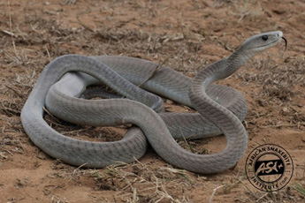
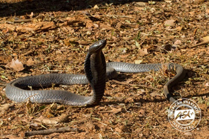
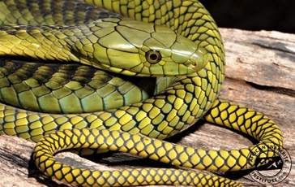
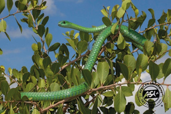
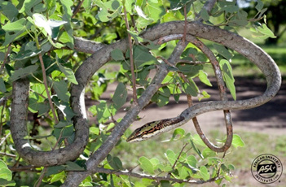
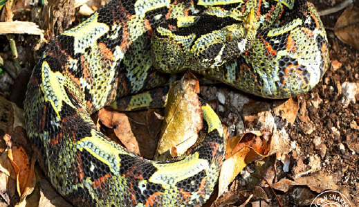
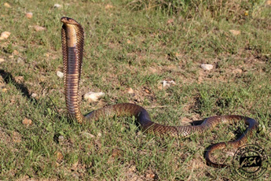
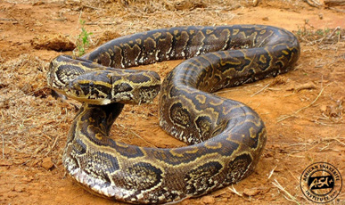
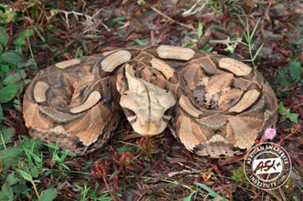
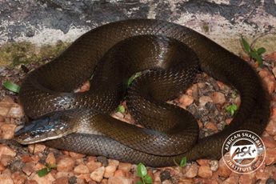

Chapter 1: Emergencies and Trauma¶
1.1 COMMON EMERGENCIES¶
1.1.1 Anaphylactic Shock¶
ICD-10 CODE: T78.2
Severe allergic reaction that occurs rapidly (seconds or minutes) after administration, or exposure, and may be life threatening. It generally affects the whole body.
Causes
- Allergy to pollens, some medicines (e.g., penicillins, vaccines, acetylsalicylic acid), or certain foods (e.g. eggs, fish, cow’s milk, nuts, some food additives)
- Reaction to insect bites, e.g., wasps and bees
Clinical features
- Body itching, hives (urticarial rash), swelling of lips, eyes, tongue
- Difficulty in breathing (stridor, wheezing)
- Hypotension and sudden collapse, excessive sweating, thin pulse
- Abdominal cramps, vomiting and diarrhoea
Differential diagnosis
- Other causes of shock, e.g., haemorrhagic (due to bleeding), hypovolemic (severe dehydration), septic
- Asthma, foreign body in airways
Management
| Treatment | LOC |
|---|---|
|
General measures Determine and remove the cause Secure the airways Restore BP: lay the patient flat and raise feet Keep patient warm |
HC2 |
|
Sodium chloride 0.9% infusion 20 ml/kg by IV infusion over 60 minutes – Start rapidly then adjust rate according to BP Administer oxygen |
HC3 |
|
Adrenaline (epinephrine) injection 1 in 1000 (1 mg/ml) 0.5 mg (0.5 ml) IM immediately, into anterolateral thigh – Repeat every 5-10 minutes according to BP, pulse rate, and respiratory function until better Child <6 years: 150 micrograms (0.15 ml) Child 6-12 years: 300 micrograms (0.3 ml) |
HC2 |
|
In severely affected patients Hydrocortisone 200 mg IM or slow IV stat Child <1 year: 25 mg Child 1-5 years: 50 mg Child 6-12 years: 100 mg |
HC3 |
|
If urticaria/itching Give an antihistamine as useful adjunctive treatment e.g., chlorpheniramine 4 mg every six hours Child 1-2 years: 1 mg every 12 hours Child 2-5 years: 1 mg every 6 hours Child 5-12 years: 2 mg every 6 hours – Or Cetirizine 5 mg once daily for adults Child 6 and above years: 5 mg daily Child 1-6 years: 2.5 mg once daily or promethazine 25-50 mg by deep IM or very slow IV (or oral) Child 1-5 years: 5 mg by deep IM Child 5-10 years: 6.25-12.5 mg by deep IM Repeat dose every 8 hours for 24-48 hours to prevent relapse Repeat adrenaline and hydrocortisone every 2-6 hours prn depending on the patient’s progress |
HC2V HC4 |
Notes
- Adrenaline: IM is the route of choice: absorption is rapid and more reliable than SC
- Monitor the patient for several hours (reaction may recur after several hours)
- If drug reaction, compile adverse drug reaction reporting form (see appendix 2)
Prevention
- Always ask about allergies before giving patients new medicine
- Keep emergency drugs at hand at health facilities and in situations where risk of anaphylaxis is high, e.g. visiting bee hives or places that usually harbour snakes
- Counsel allergic patients to wear alert bracelet or tag
1.1.2 Hypovolaemic Shock¶
ICD-10 CODE: R57.1
Condition caused by severe acute loss of intravascular fluids leading to inadequate circulating volume and inadequate perfusion.
Causes
- Loss of blood due to internal or external haemorrhage (e.g., post-partum haemorrhage, splenic rupture etc.)
- Acute loss of fluids, e.g. in gastroenteritis, or extensive burns
Clinical features
- High heart rate, fast breathing rate
- Thin or absent pulse, cold extremities, slow capillary refill
- Low blood pressure
- Mental agitation, confusion
Classification of hypovolaemia in adults
| Indicator | Class 1 Mild | Class 2 | Class 3 Progressing Severe | Class 4 End Stage |
|---|---|---|---|---|
| Blood loss (litres) | <0.75 | 0.75–1.5 | 1.5–2 | >2 |
| % of total blood volume loss | <15 | 15–30 | 30–40 | >40 |
| Pulse rate | Normal | >100 | >120 | >140 |
| Pulse pressure | Normal | Decreased | Decreased | Decreased |
| Systolic BP | Normal | Normal | Decreased | Absent |
| Capillary refill | Normal | Delayed | Delayed | Absent |
| Respiratory rate | 20–30 | 30–40 | >40 | >45 or gasping |
| Mental state | Alert | Anxious | Confused | Confused / unconscious |
| Urine output (ml/hr) | >30 | 20–30 | 5–20 | <5 |
Management in adults
| Treatment | LOC |
|---|---|
| Control obvious bleeding with pressure | HC3 |
| Keep patient lying down with raised legs | |
| If established hypovolaemia class 2 and above | |
| Set 2 large bore IV lines | |
| IV fluids (Normal saline 0.9% or Ringer’s lactate) 20–30 ml/kg over 60 minutes | |
| Start rapidly, monitor BP | |
| Assess response to fluid resuscitation (BP, HR, RR, capillary refill, urine output) | |
| If internal or external haemorrhage consider blood transfusion | |
| If rapid improvement and stable (blood loss <20%) | HC4 |
| Slow IV fluids to maintenance levels | |
| No immediate transfusion but cross-matching | |
| Regular reassessment | |
| Detailed examination and definitive treatment | |
| If transient improvement (blood loss 20–40%) | |
| Rapid administration of fluids | |
| Initiate blood transfusion | |
| Regular reassessment | |
| Early surgery if needed | |
| If no improvement | |
| Vigorous fluid administration | |
| Urgent blood transfusion | |
| Immediate surgery |
Treatment – caution
| Treatment | LOC |
|---|---|
| Do not use glucose solution or plain water as replacement fluids |
1.1.2.1 Hypovolaemic Shock in Children¶
- Recognising this may be more difficult than in adults
- Vital signs may change little, even when up to 25% of blood volume is lost (class 1 and 2 hypovolaemia)
- Tachycardia is often the first response to hypovolaemia but may also be caused by fear or pain
Classification of hypovolaemia in children
| Indicator | Class 1 Mild | Class 2 ProgresSing | Class 3 Severe | Class 4 End Stage |
|---|---|---|---|---|
| % of total blood volume loss <15 | % of total blood volume loss <15 | 15-25 | 25-40 | >40 |
| Pulse rate | Normal | >150 | >150 | >150 |
| Pulse pressure | Normal | N | | Absent |
| Systolic BP | Normal | N | | Absent |
| Capillary refill | Normal | á | áá | Absent |
| Respiratory rate | Normal | N/á | áá | áá Slow sighing |
| Mental state | Normal | Irritable | Lethargic | Comatose |
| Urine output (ml/ kg/ hour) | <1 | <1 | <1 | <1 |
Normal ranges for vital signs in children
| Age (Years) | Pulse (Rate/Min) | Systolic Bp (Mmhg) | Respiration (Rate/Min) | Blood Vol (Ml/Kg) |
|---|---|---|---|---|
| <1 | 120–160 | 70–90 | 30–40 | 85–90 |
| 1–5 | 100–120 | 80–90 | 25–30 | 80 |
| 6–12 | 80–100 | 90–110 | 20–25 | 80 |
| >12 | 60–100 | 100–120 | 15–20 | 70 |
Management
| TREATMENT | LOC |
|---|---|
| Initial fluid challenge should represent 25% of blood volume as signs of hypovolaemia may only show after this amount is lost If there are signs of class 2 hypovolaemia or greater, give 20-30 ml/kg of Normal Saline 0.9% (or Ringer’s lactate) over 60 minutes - Start rapidly - Monitor BP - Reduce rate depending on BP response Dependingo n response,r epeat upt o 3t imesi f nec- essary i.e. up to max 60 ml/kg If no response: Give further IV fluids and blood transfusion Initially transfuse 20 ml/kg of whole blood or 10 ml/ kg of packed cells (only in severe anaemia) |
HC3 HC4 |
1.1.3 Dehydration¶
A condition brought about by the loss of significant quantities of fluids and salts from the body.
Causes
- Vomiting and/or diarrhoea
- Decreased fluid intake
- Excessive loss of fluids, e.g. due to polyuria in diabetes, excessive sweating as in high fever, burns
Clinical features
- Apathy, sunken eyes/fontanel, loss of skin turgor (especially in children)
- Hypotension, tachycardia, deep (acidotic) breathing, dry mucosae, poor or no urine output. 1.1.3.1 Dehydration in Children under 5 years Assess degree of dehydration following the table below:
1.1.3.1 Clinical features of dehydration in children¶
| Signs | Degree of Dehydration | Degree of Dehydration | Degree of Dehydration |
|---|---|---|---|
| Signs | None | Some | Severe |
| General condition | Well, alert | Restless, irritable | Lethargic, drowsy or unconscious |
| Eyes | Not sunken | Sunken | Sunken |
| Fontanel | Not sunken | Sunken | Sunken |
| Ability to drink | Drinks normally | Drinks eagerly, thirsty | Drinks poorly or not able to drink |
| Skin pinch | Goes back immediately | Goes back slowly; <2 seconds | Goes back very slowly; >2 seconds |
| Treatment | Plan A | Plan B | Plan C |
Management Plan A (No dehydration and for prevention)
| TREATMENT | LOC |
|---|---|
| - Counsel the mother on the 4 rules of home treatment: extra fluids (ORS), continue feeding, zinc supplementation, when to return - Give extra fluids: as much as the child will take - If child exclusively breastfed, give ORS or safe clean water in addition to breast milk - If child not exclusively breastfed, give one or more of: ORS, soup, rice-water, yoghurt, clean water - In addition to the usual fluid intake, give ORS after each loose stool or episode of vomiting Child <2 years: 50-100 ml Child 2-5 years: 100-200 ml - Give the mother 2 packets to use at home - Giving ORS is especially important if the child has been treated with Plan B or Plan C during current visit - Give frequent small sips from a cup - Advice the mother to continue or increase breastfeeding. If child vomits, wait 10 minutes, then give more slowly - In a child with high fever or respiratory distress, give plenty of fluids to counter the increased fluid losses in these conditions - Continue giving extra fluid as well as ORS until - the diarrhoea or other cause of dehydration stops - If diarrhoea, give Zinc supplementation Child <6 months: 10 mg once a day for 10 days Child >6 months: 20 mg once a day for 10 days |
HC2 |
Plan B (Some dehydration)
| TREATMENT | LOC |
|---|---|
| - Give ORS in the following approximate amounts during the first 4 hours |
Age (Months) |
| --- | --- |
| Weight (Kg) | <6 |
| Ors (Ml) | 200–400 |
- Only use child’s age if weight is not known - You can also calculate the approximate amount of ORS to give a child in the first 4 hours as weight (kg) x 75 ml - Show the mother how to give the ORS - Give frequent small sips from a cup - If the child wants more than is shown in the table, give more as required - If the child vomits, wait 10 minutes, then continue more slowly - For infants <6 months who are not breastfed, also give 100-200 ml of clean water during the first 4 hours - Reassess patient frequently (every 30-60 minutes) for classification of dehydration and selection of Treatment Plan After 4 hours - Reassess the patient - Reclassify the degree of dehydration - Select the appropriate Treatment Plan A, B or C - Begin feeding the child in the clinic |
HC2 |
| TREATMENT | LOC |
|---|---|
| If mother must leave before completing the child’s treatment Show her how to prepare ORS at home and how much ORS to give to finish the 4-hour treatment - Give her enough packets to complete this and 2 more to complete Plan A at home Counsel mother on the 4 rules of home treatment: extra fluids, continue feeding, zinc, when to return |
Plan C (Severe dehydration)
| TREATMENT | LOC |
|---|---|
| If you are unable to give IV fluids and this therapy is not available nearby (within 30 minutes) but a nasogastric tube (NGT) is available or the child can drink Start rehydration with ORS by NGT or by mouth: Give 20 ml/kg/hour for 6 hours (total = 120 ml/ kg) Reassess the child every 1-2 hours - If there is repeated vomiting or increasing abdominal distension, give more slowly - If hydration status is not improving within 3hours, refer the child urgently for IV therapy After 6 hours, reassess the child Classify the degree of dehydration Select appropriate Plan A, B, or C to continue treatment |
HC2 |
| TREATMENT | LOC |
|---|---|
| If you are unable to give IV fluids but IV treatment is available nearby (i.e. within 30 minutes) - Refer urgently for IV treatment If the child can drink: - Provide mother with ORS and show her how to give frequent sips during the trip to the referral facility |
HC2 |
| If you are able to give IV fluids - Set up an IV line immediately - If child can drink, give ORS while the drip is set up - Give 100 ml/kg of Ringer’s Lactate - Or half-strength Darrow’s solution in glucose 2.5% or sodium chloride 0.9% - Divide the IV fluid as follows: - Reassess patient frequently (every 30-60 minutes) to re-classify dehydration and treatment plan If the patient is not improving - Give the IV fluids more rapidly |
HC3 |
| As soon as patient can drink, usually after 3-4 hours in infants or 1-2 hours in children - Also give ORS 5 ml/kg/hour |
|
| - Continue to reassess patient frequently; classify degree of dehydration; and select appropriate Plan A, B, or C to continue treatment. |
Note
If possible, observe child for at least 6 hours after rehydration to ensure that the mother can correctly use ORS to maintain hydration.|Note If possible, observe child for at least 6 hours after rehydration to ensure that the mother can correctly use ORS to maintain hydration.
1.1.3.1 Dehydration in Children under 5 years¶
Assess degree of dehydration following the table below.
Clinical features of dehydration in children¶
| Signs | None | Some | Severe |
|---|---|---|---|
| General condition | Well, alert | Restless, irritable | Lethargic, drowsy or unconscious |
| Eyes | Not sunken | Sunken | Sunken |
| Fontanel | Not sunken | Sunken | Sunken |
| Ability to drink | Drinks normally | Drinks eagerly, thirsty | Drinks poorly or not able to drink |
| Skin pinch | Goes back immediately | Goes back slowly, <2 seconds | Goes back very slowly, >2 seconds |
| Treatment | Plan A | Plan B | Plan C |
Management
Plan A (No dehydration and for prevention)
| Treatment | LOC |
|---|---|
| Counsel the mother on the 4 rules of home treatment: extra fluids, ORS, continue feeding, zinc supplement tablets, when to return | HC2 |
| Give extra fluids as much as the child will take | |
| If child could not be breastfed, give ORS or safe clean water in addition to breast milk | |
| If child not exclusively breastfed, give extra ORS after each stool or episode of vomiting (HC2 visit after 5–10 stools) | |
| Children under 2 years: give 50–100 ml ORS after each stool or episode of vomiting | |
| Children 2–5 years: give 100–200 ml ORS after each stool or episode of vomiting | |
| Give more than enough, not a bottle measure | |
| Give zinc supplement tablets: child <6 months: 10 mg once a day for 10 days; child >6 months: 20 mg once a day for 10 days |
Plan B (Some dehydration)
| Treatment | LOC |
|---|---|
| Give ORS in the following approximate amounts during the first 4 hours | HC2 |
| Age (months) | <4 | 4–12 | 12–24 | 25–60 |
|---|---|---|---|---|
| Weight (kg) | <6 | 6–<10 | 10–<12 | 12–19 |
| ORS (ml) | 200–400 | 400–700 | 700–900 | 900–1400 |
- ORS can also be calculated approximately as 75 ml/kg of body weight over 4 hours.
- Show the mother how to give the ORS.
- Give frequent small sips from a cup.
- If the child vomits, wait 10 minutes, then continue more slowly.
After 4 hours:
- Reassess the patient
- Reclassify the degree of dehydration
- Select the appropriate treatment Plan A, B or C
- Begin feeding the child in the clinic
If the mother must leave before completing the child’s treatment:
- Show her how to prepare ORS at home and how much ORS to give to finish the 4-hour treatment
- Show her enough packets to complete this and 2 more if diarrhoea occurs
- Counsel mother on the 4 rules of home treatment: extra fluids, continue feeding, when to return
Plan C (Severe dehydration)
| Treatment | LOC |
|---|---|
| If you are unable to give IV fluids and therapy is not available nearby (within 30 minutes) but a nasogastric tube (NGT) is available or the child can drink: | HC2 |
| Start rehydration with ORS by NGT or by mouth. Give 20 ml/kg/hour for 6 hours (120 ml/kg) | |
| Reassess the child every 1–2 hours | |
| If there is repeated vomiting or increasing abdominal distension, slow the rate of rehydration | |
| If hydration status is not improving within 3 hours, refer the child urgently for IV therapy | |
| After 6 hours, reassess the child and select appropriate Plan A, B or C to continue treatment |
| Treatment | LOC |
|---|---|
| If you are unable to give IV fluids but IV treatment is available nearby (i.e. within 30 minutes): | HC2 |
| Refer urgently for IV treatment | |
| If the child can drink: provide mother with ORS and show her how to give frequent sips during the trip to the referral hospital |
| Treatment | LOC |
|---|---|
| If you are able to give IV fluids: | HC3 |
| Set up an IV line immediately | |
| If child can drink, show ORS while the drip is set up | |
| Give 100 ml/kg of Ringer’s Lactate | |
| If not available, use 0.9% sodium chloride | |
| Divide the IV fluid as follows: |
Infants <12 months: first 30 ml/kg in 1 hour, then 70 ml/kg in 5 hours
Children ≥12 months: first 30 ml/kg in 30 minutes, then 70 ml/kg in 2½ hours
- Reassess every 1–2 hours.
- If hydration status is not improving, give the IV drip more rapidly.
- As soon as the child can drink, usually after 3–4 hours in infants or 1–2 hours in older children, give ORS (about 5 ml/kg/hour).
- Continue to reassess and select appropriate Plan A, B or C to continue treatment.
Note
If possible, observe the child for at least 6 hours after rehydration to ensure that mother can correctly use ORS to maintain hydration.
1.1.3.2 Dehydration in Older Children and Adults¶
Assess degree of dehydration following the table below.
CLINICAL FEATURE DEGREE OF DEHYDRATION
| MILD | MODERATE SEVERE |
|---|---|
| General appearance Thirsty, alert | Thirsty, alert Generally conscious, anxious, clammy, cold extremities, cyanosis, wrinkly skin of fingers, muscle cramps, dizzy if standing |
| Pulse Normal | Rapid Rapid, thready, sometimes absent |
| Respiration Normal | Deep, may be rapid Deep and rapid |
| Systolic BP Normal | Normal Low, may be immeasurable |
| Skin pinch Rturns rapidly Eyes Normal Tears Present Mucous membranes Moist |
Rturns slowly Returns very slowly (>2 seconds) Sunken Very sunken Absent Absent Dry Very dry |
| Urine output Normal | Reduced, dark urine Anuria, empty bladder |
Note At least 2 of these signs must be present
Management
| TREATMENT | LOC |
|---|---|
| Mild dehydration Give oral ORS 25 ml/kg in the first 4 hours - Increase or maintain until clinical improvement Moderate dehydration Give oral ORS 50 mg/kg in the first 4 hours Severe dehydration Ringer’s lactate (or Normal Saline 0.9%) IV, 50 ml/kg in the first 4 hours - Give IV fluids rapidly until radial pulse can be felt, - then adjust rate - Re-evaluate vitals after 4 hours Volumes that are given over the first 24 hours in adults are shown in the table below |
HC2 HC3 |
| Time period | Volume of iv fluid |
|---|---|
| First hour | 1 L |
| Next 3 hours | 2 L |
| Next 20 hours | 3 L |
After 4 hours, evaluate rehydration in terms of clinical signs (NOT in terms of volumes of fluid given)
As soon as signs of dehydration have disappeared (but not before), start fluid maintenance therapy, alternating ORS and water (to avoid hypernatraemia) as much as the patient wants
Continue for as long as the cause of the original dehydration persists.
| Notes Volumes shown are guidelines only. If necessary, volumes can be increased or initial high rate of administration maintained until clinical improvement occurs In addition toORS, other fluids such as soup, fruit juice and safe clean water may be given - Initially, adults can take up to 750 ml ORS/hour. If sodium lactate compound IV infusion (Ringer’s Lactate) is not available, use half-strength Darrow’s solution in glucose 2.5% or sodium chloride infusion 0.9%. However, both of these are less effective Continued nutrition is important, and food should be continued during treatment for dehydration. |
|---|
| Caution Avoid artificially sweetened juices. |
Prevention (for all age groups)
- Encourage prompt use of ORS at home if the personis vomiting and/or having diarrhoea.
1.1.4 Fluids and Electrolytes Imbalances¶
ICD10 CODE: E87.8
A condition where losses of bodily fluids from whatever cause has led to significant disturbance in the normal fluid and electrolyte levels needed to maintain physiological functions.
Causes
Disorders may occur in the fluid volume, concentration (sodium composition), and distribution of fluid and other electrolytes and ph. The main cause is problems in intake, loss and/or distribution and balance between water and electrolytes, as shown in the table below:
| MECHANISM | EXAMPLES |
|---|---|
| Gastrointestinal loss |
- Excessive vomiting and diarrhoea
- Nasogastric drainage
- Fistula drainage| |Haemorrhage|
-
Internal or external| |Fluid sequestration|
-
Paralytic ileus, intestinal obstruction
-
Peritonitis| |Loss through skin/ wounds|
-
Sweating
-
Extensive burns| |Urinary loss|
-
Decompensated diabetes| |Fluid retention and electrolytes or water imbalances|
-
Renal, hepatic and heart failure (see specific section for management)| |Reduced intake|
-
Post operative patients| |Excessive intake|
-
Water intoxication, IV fluids overload|
Clinical features
- Dehydration in mild/moderate fluid (water and electrolytes)deficiency
- Hypovolaemic shock in severe fluid deficiency
- Oedema (including pulmonary oedema) in fluid excess
- Specific effects due to electrolytes imbalances Management IV fluids and electrolytes therapy has three main objectives:
- Replace lost body fluids and continuing losses
- Correct eventual imbalances
- Maintain daily fluid requirements.
| Always use an IV drip for patients who are seriously ill (except patients with congestive heart failure; for these, use only an indwelling needle) and may need IV drugs or surgery. If the fluid is not needed urgently, run it slowly to keep the IV line open. |
|---|
Maintenance fluid therapy
| TREATMENT | LOC |
|---|---|
| Administer daily fluid and electrolyte requirements to any patient not able to feed The basic 24-hour maintenance requirement for an adult is 2.5-3 litres - One third of these daily fluids should be (isotonic) - sodium chloride 0.9% infusion (or Ringer’s Lactate), the other two thirds Glucose 5% infusion As well as the daily requirements, replace fluid lost due to the particular condition according to the assessed degree of dehydration. |
HC3 |
| Notes Closely monitor all IV drips to ensure that the rate is adjusted as required Check the drip site daily for any signs of infection; change drip site every 2-3 days or when the drip goes into tissues (extravasation). |
Notes Closely monitor all IV drips to ensure that the rate is adjusted as required Check the drip site daily for any signs of infection; change drip site every 2-3 days or when the drip goes into tissues (extravasation). |
Replecment therapy in specific conditions
| TREATMENT | LOC |
|---|---|
| Dehydration see section 1.1.3 | HC3 |
| Diarrhoea and vomiting with severe dehydration, paralytic ileus, intestinal obstruction Replace fluid losses with isotonic (sodium) solutions containing potassium e.g. compound sodium lactate infusion (Ringer’s Lactate solution) Or half-strength Darrow’s solution in 2.5% glucose infusion |
Diarrhoea and vomiting with severe dehydration, paralytic ileus, intestinal obstruction Replace fluid losses with isotonic (sodium) solutions containing potassium e.g. compound sodium lactate infusion (Ringer’s Lactate solution) Or half-strength Darrow’s solution in 2.5% glucose infusion |
| Haemorrhage If there is blood loss and the patient is not in shock Use sodium chloride 0.9% infusion for blood volume replacement giving 0.5-1 L in the 1st hour and not more than 2-3 L in 4 hours If there is blood loss >1 litre Give 1-2 units of blood to replace volume and concentration |
Haemorrhage If there is blood loss and the patient is not in shock Use sodium chloride 0.9% infusion for blood volume replacement giving 0.5-1 L in the 1st hour and not more than 2-3 L in 4 hours If there is blood loss >1 litre Give 1-2 units of blood to replace volume and concentration |
| Shock Give Ringer’s Lactate or sodium chloride 0.9% infusion 20 ml/ kg IV over 60 minutes for initial volume resuscitation - Start rapidly, closely monitor BP - Reduce the rate according to BP response In patients with severe shock and significant haemorrhage, give a blood transfusion |
Shock Give Ringer’s Lactate or sodium chloride 0.9% infusion 20 ml/ kg IV over 60 minutes for initial volume resuscitation - Start rapidly, closely monitor BP - Reduce the rate according to BP response In patients with severe shock and significant haemorrhage, give a blood transfusion |
| Notes Closely monitor all IV drips to ensure that the rate is adjusted as required Check the drip site daily for any signs of infection; change drip site every 2-3 days or when the drip goes into tissues (extravasation). |
Notes Closely monitor all IV drips to ensure that the rate is adjusted as required Check the drip site daily for any signs of infection; change drip site every 2-3 days or when the drip goes into tissues (extravasation). |
1.1.4.1 IV Fluid management in children¶
ICD10 CODE: E87.8
| TREATMENT | LOC |
|---|---|
| Total daily maintenance fluid requirement is 100 ml/kg for the first 10 kg plus - 50 ml/kg for the next 10 kg plus 25 ml/kg for each subsequent kg Give more than above if child is dehydrated or in fluid loss or fever (10% more for each 1°C of fever) |
HC4 |
Fluid management in neonates
| TREATMENT | LOC |
|---|---|
| Encourage mother to breastfeed or if child unable, give expressed breast milk via NGT Withhold oral feeding in case of bowel obstruction, necrotizing enterocolitis, or if feeding is not tolerated (abdominal distension, vomiting everything) Withhold oral feeding in acute phase of severe sickness, in infants who are lethargic, unconscious or having frequent convulsions |
HC4 |
| Total amount of fluids (oral and/or IV) Day 1: 60 ml/kg/day of Dextrose 10% Day 2: 90 ml/kg/day of Dextrose 10% Day 3: 120 ml/kg/day of half normal saline and dextrose 5% Day 4 onwards: 150 ml/kg/day If only IV fluids are given, do not exceed 100 ml/ kg/ day unless child is dehydrated, under a radiant heater or phototherapy If facial swelling develops, reduce rate of infusion When oral feeding is well established, raise the total amount to 180 ml/kg/day. |
Shock in non-malnourished child
| TREATMENT | LOC |
|---|---|
| Use Ringer’s lactate or normal saline Infuse 20 ml/kg as rapidly as possible | HC3 |
| If no improvement Repeat 10-20 ml/kg of IV fluids If bleeding, give blood at 20 ml/kg If still no improvement Give another 20 ml/kg of IV fluids If no improvement further still Suspect septic shock Repeat 20 ml/kg IV fluids and consider adrenaline or dopamine If improvement noted at any stage (reducing heart rate, increase in blood pressure and pulse volume, capillary refill <2 seconds) Give 70 ml/kg of Ringer’s lactate (or Normal saline if Ringer’s not available) over 5 hours (if infant <12 months) or 2.5 hours (if child >12 months) |
HC4 |
| Note In children with suspected malaria or anaemia with shock, IV fluids should be administered cautiously and blood should be used in severe anaemia |
Note In children with suspected malaria or anaemia with shock, IV fluids should be administered cautiously and blood should be used in severe anaemia |
Shock in malnourished child
| TREATMENT | LOC |
|---|---|
| In malnourished children, give 15 ml/kg over 1 hour, use one of the following: - Ringer’s lactate with 5% glucose - Half strength darrow’s solution with 5% glucose - 0.45% Sodium chloride plus 5% glucose |
HC3 |
Shock in malnourished child
| TREATMENT | LOC |
|---|---|
| Repeat once If signs of improvement Switch to oral or NGT ReSoMal at 10 ml/kg/hour for up to 10 hours If no improvement Give maintenance IV fluids 4 ml/kg/hour f Transfuse 10 ml/kg slowly (over 3 hours) f Start refeeding Start IV antibiotics. |
HC3 |
| Repeat once If signs of improvement Switch to oral or NGT ReSoMal at 10 ml/kg/hour for up to 10 hours If no improvement Give maintenance IV fluids 4 ml/kg/hour f Transfuse 10 ml/kg slowly (over 3 hours) f Start refeeding Start IV antibiotics. |
Commonly used IV fluids and indication
| NAME | COMPOSITION | INDICATIONS |
|---|---|---|
| Sodium Chloride 0.9% (normal saline) | Na 154 mmol/L Cl 154 mmol/L | Shock, dehydration in adults (and children) Maintenance fluid in adults |
| Dextrose (Glucose) 5% | Glucose 25 g in 500 ml | Maintenance fluid in adults |
| Dextrose (Glucose) 10%1 (to be prepared) | Glucose 50 g in 500 ml | Hypoglycaemia in children and adults Maintenance fluids in newborns day 1 and 2 |
| Dextrose 50% | Glucose 50 g in 100 ml | Hypoglycaemia in adults |
| Ringer’s lactate (Sodium lactate compound, Harmann’s solution) | Na 130 mmol/L K 5.4 mmol/L Ca 1.8 mmol/L | Shock, dehydration in children (and adults) Maintenance fluid in adults |
| ½ strenghth Darrow’s solution in 5% glucose | Na 61 mmol/L K 17 mmol/L Glucose 25 g in 500 ml | Shock and dehydration in malnourished children |
| NAME | COMPOSITION | INDICATIONS |
|---|---|---|
| Half normal saline (Nacl 0.45%) dextrose 5%2 (to be prepared) |
Na 77 mmol/L Cl 77 mmol/L Glucose 25 g in 500 ml | Maintenance fluid in children Shock and dehydration in malnourished children |
| Normal saline or Ringer’s lactate with 5% dextrose3 (to be prepared) |
Na 154/130 K 0/5.4 Glucose 25 g in 500 ml |
Maintenance fluid in children |
| Note 1 Prepare from Dextrose 5% and 50%: Remove 50 ml from Dextrose 5% 500 ml bottle and discard Replace with 50 ml of Dextrose 50%. Shake Follow normal aseptic techniques Use immediately, DO NOT STORE 2 Prepare from Normal saline 500 ml bottle and dextrose 5% and 50% Replace 250 ml of Normal saline with 225 ml of Dextrose 5% and 25 ml of Dextrose 50% 3 Prepare by replacing 50 ml of normal saline or Ringer’s 500 ml bottle with 50 ml of Dextrose 50% |
|---|
1.1.5 Febrile Convulsions¶
ICD10 CODE: R56
Causes
- Malaria
- Respiratory tract infections
- Urinary tract infections
- Other febrile conditions Clinical features
- Elevated temperature (>38°C)
- Convulsions usually brief and self-limiting (usually <5 minutes, always <15 minutes) but may recur if temperature remains high
- No neurological abnormality in the period between convulsions
- Generally benign and with good prognosis Differential diagnosis
- Epilepsy, brain lesions, meningitis, encephalitis
- Trauma (head injury)
- Hypoglycaemia
- If intracranial pathology cannot be clinically excluded (es-
pecially in children <2 years) consider lumbar puncture or treat children empirically for meningitis
Investigations
Blood: Slide/RDT for malaria parasites Random blood glucose Full blood count LP and CSF examination
¾ Urinalysis, culture and sensitivity ¾ Chest X-ray Management
| TREATMENT | LOC |
|---|---|
| Use tepid sponging to help lower temperature Give an antipyretic: paracetamol 15 mg/kg every 6 hours until fever subsides |
HC2 |
| TREATMENT | LOC |
|---|---|
| If convulsing Give diazepam 500 micrograms/kg rectally (using suppos- itories/rectal tube or diluted parenteral solution) Maximum dose is 10 mg Repeat prn after 10 minutes If unconscious Position the patient on the side (recovery position) and ensure airways, breathing and circulation (ABC) If persistent convulsions see section 9.1.1 |
HC2 HC4 |
Prevention
Educate caregivers on how to control fever (tepid sponging and paracetamol)
1.1.6 Hypoglycaemia¶
ICD10 CODE: E16.2
A clinical condition due to reduced levels of blood sugar (glucose). Symptoms generally occur with a blood glucose <3.0 mmol/L (55 mg/dl).
Cause
- Overdose of insulin or anti-diabetic medicines
- Excessive alcohol intakeSepsis, critical illnesses
- Hepatic disease
- Prematurity
- Starvation
- Operations to reduce the size of the stomach (gastrectomy)
- Tumours of the pancreas (insulinomas)
- Certain drugs e.g. quinine
- Hormone deficiencies (cortisol, growth hormone) Clinical features
- Early symptoms: hunger, dizziness, tremors, sweating, nervousness and confusion
- Profuse sweating, palpitations, weakness
- Convulsions
- Loss of consciousness Differential diagnosis
- Other causes of loss of consciousness (poisoning, head injury etc.) Investigations
Blood sugar (generally <3.0 mmol/L) Specific investigations: to exclude other causes of hypoglycaemia Management
| TREATMENT | LOC |
|---|---|
| If patient is able to swallow Oral glucose or sugar 10-20 g in 100-200 ml water (2-4 teaspoons) is usually taken initially and repeated after 15 minutes if necessary If patient is unconscious Adults: glucose 50% 20-50 ml IV slowly (3 ml/ minute) or diluted with normal saline, followed by 10 % glucose solution by drip at 5-10 mg /kg/ minute until patient regains consciousness, then encourage oral snacks Child: Dextrose 10% IV 2-5 ml/kg If patient does not regain consciousness after 30 minutes, consider other causes of coma Monitor blood sugar for several hours (at least 12 if hypoglycaemia caused by oral antidiabetics) and investigate the cause – manage accordingly. |
HC2 HC3 |
| Note After dextrose 50%, flush the IV line to avoid sclerosis of the vein (dextrose is very irritant) Preparation of Dextrose 10% from Dextrose 5% and Dextrose 50%: - Remove 50 ml from Dextrose 5% bottle and discard - Replace with 50 ml of Dextrose 50%. Shake - Follow normal aseptic techniques - Use immediately, DO NOT STORE. |
|---|
Prevention
- Educate patients at risk of hypoglycaemia on recognition of early symptoms e.g. diabetics, patients who have had a gastrectomy
- Advise patients at risk to have regular meals and to always have glucose or sugar with them for emergency treatment of hypoglycaemia
- Advise diabetic patients to carry an identification tag
1.2 TRAUMA AND INJURIES¶
1.2.1 Bites and Stings¶
Wounds caused by teeth, fangs or stings.
Causes
- Animals (e.g. dogs, snakes), humans or insects
Clinical features
- Depend on the cause
General management
| TREATMENT | LOC |
|---|---|
| First aid | HC2 |
| Immediately clean the wound thoroughly with plenty of clean water and soap to remove any dirt or foreign bodies | |
| Stop excessive bleeding by applying pressure where necessary | |
| Rinse the wound and allow to dry | |
| Apply an antiseptic: Chlorhexidine solution 0.05% or Povidone iodine solution 10% | |
| Supportive therapy | HC3 |
| Treat anaphylactic shock (see section 1.1.1) | |
| Treat swelling if significant as necessary, using ice packs or cold compresses | |
| Give analgesics prn | |
| Reassure and immobilise the patient | |
| Antibiotics | |
| Give only for infected or high-risk wounds including: | |
| Moderate to severe wounds with extensive tissue damage | |
| Very contaminated wounds | |
| Deep puncture wounds (especially by cats) | |
| Wounds on hands, feet, genitalia or face | |
| Wounds with underlying structures involved | |
| Wounds in immunocompromised patients | |
| See next sections on wound management, human and animal bites for more details | |
| Tetanus prophylaxis | |
| Give TT immunisation (tetanus toxoid, TT 0.5 ml) if not previously immunised within the last 10 years |
| TREATMENT | LOC |
|---|---|
| Caution | |
| Do not suture bite wounds |
1.2.1.1 Snakebites¶
Snakebites can cause both local and systemic effects. Non-venomous snakes usually cause local effects such as swelling, redness, and laceration. Venomous snakes may cause both local and systemic effects due to envenomation.
Over 70% of snakes in Uganda are non-venomous, and most bites are from non-venomous snakes. Among venomous snakes, more than 50% of bites are “dry” bites, meaning no venom is injected. When venom is injected, its effect depends on the type and amount of venom, the location of the bite, and the size and general condition of the patient.
Cause
Common venomous snakes in Uganda include:
-
Puff adder
-
Gaboon viper
-
Black mamba
-
Brown forest cobra
-
Egyptian cobra
-
Boomslang
See the image section below for examples of some common snakes in Uganda.
Clinical features
| Local symptoms and signs | Generalized/systemic symptoms and signs |
|---|---|
| Fang marks
Malaise
Swelling
Local bleeding
Pain
Blistering
Redness
Skin discoloration or necrosis | Vomiting
Difficulty in breathing
Abdominal pain
Weakness
Loss of consciousness
Confusion
Shock |
Cytotoxic venom
Examples: Puff adder and Gaboon viper.
Features may include:
-
extensive local swelling
-
pain
-
lymphadenopathy
-
symptoms starting about 10 to 30 minutes after the bite
Neurotoxic venom
Examples: Jameson’s mamba, Egyptian cobra, forest cobra, and black mamba.
Features may include:
- weakness
- paralysis
- difficulty in breathing
- drooping eyelids
- difficulty in swallowing
- double vision
- slurred speech
- excessive sweating and salivation
- symptoms starting about 15 to 30 minutes after the bite
Haemotoxic venom
Examples: Boomslang and vine/twig snake.
Features may include:
-
excessive swelling and oozing from the bite site
-
skin discoloration
-
excessive bleeding
-
bloody blisters
-
haematuria
-
haematemesis, even after some days
-
shock
Combined venom toxicity
Combined venom toxicity may present with late appearance of signs and symptoms.
Investigations
Whole blood clotting test should be done on arrival and repeated every 4 to 6 hours after the first day.
Procedure:
-
put 2 to 5 ml of blood in a dry tube
-
observe after 30 minutes
-
incomplete clotting or failure to clot indicates coagulation abnormality
Other useful tests depend on severity, level of care, and availability:
-
oxygen saturation, pulse rate, blood pressure, and respiratory rate
-
haemoglobin, PCV, platelet count, PT, APTT, and D-dimer
-
serum creatinine, urea, and potassium
-
urine tests for proteinuria, haemoglobinuria, and myoglobinuria
-
ECG, X-ray, and ultrasound where indicated
Management
| What to do | What not to do |
|---|---|
| Reassure the patient and keep them calm
Lay the patient on the side to avoid movement of affected areas
Remove all tight items around the affected area
Leave the wound or bite area alone
Immobilize the patient | Do not panic
Do not lay the patient on their back, as this may block the airway
Do not apply a tourniquet
Do not squeeze or incise the wound
Do not attempt to suck out the venom
Do not try to kill or attack the snake
Do not use traditional methods or herbs |
Venom in eyes
-
Irrigate eyes with plenty of water
-
Cover with eye pads
Treatment
| Treatment | LOC |
|---|---|
| Assess skin for fang penetration.
If there are signs of fang penetration:
- immobilise the limb with a splint
- give analgesic such as paracetamol
- avoid NSAIDs such as aspirin, diclofenac, and ibuprofen
If there are no signs and symptoms for 6 to 8 hours, this is most likely a bite without envenomation.
Observation for 12 to 24 hours is recommended.
Give tetanus toxoid 0.5 ml IM if the patient has not been immunised in the last 10 years.
If local necrosis develops:
- remove blisters
- clean and dress daily
- debride after lesions stabilise, minimum 15 days | HC2 |
Criteria for referral for antivenom
Refer for administration of antivenom if there are signs of systemic envenoming, including:
-
paralysis
-
respiratory difficulty
-
bleeding
Refer where there is spreading local damage, including:
-
swelling of the hand or foot within 1 hour of the bite
-
swelling of the elbow or knee within 3 hours of the bite
-
swelling of the groin or chest at any time
-
significant swelling of the head or neck
Antivenom
Use polyvalent antivenom sera for Africa where indicated.
-
Check the package insert for IV dosage details.
-
Ensure the solution is clear.
-
Check that the patient has no history of allergy.
-
Antibiotics are indicated only if the wound is infected.
Images of some common snakes in Uganda
{kind=link}
{kind=link}


{kind=link}

{kind=link}

{kind=link}

{kind=link}

{kind=link}

{kind=link}

{kind=link}
{kind=link}

{kind=link}

{kind=link}
{kind=link}

1.2.1.2 Insect Bites & Stings¶
ICD10 CODE: T63.4
Causes
-
Bees, wasps, hornets and ants: venom is usually mild and causes only local reaction but may cause anaphylactic shock in previously sensitized persons
-
Spiders and scorpions: Most are non-venomous or only mildly venomous Other stinging insectsClinical features
-
Swelling, discolouration, burning sensation, pain at the site of the sting
-
There may be signs of anaphylactic shock. Differential diagnosis
-
Allergic reaction
| MANAGEMENT | LOC |
|---|---|
| If the sting remains implanted in the skin, carefully remove with a needle or knife blade Apply cold water/ice If severe local reaction |
HC2 |
| MANAGEMENT | LOC |
|---|---|
| Give chlorpheniramine 4 mg every 6 hours (max: 24 mg daily) until swelling subsides Child 1-2 years: 1 mg every 12 hours Child 2-5 years: 1 mg every 6 hours (max: 6 mg daily) Child 6-12 years: 2 mg every 6 hours (max: 12 mg daily) Apply calamine lotion prn every 6 hours If very painful scorpion sting Infiltrate 2 ml of lignocaine 2% around the area of the bite If signs of systemic envenomation Refer |
HC2 |
Prevention
-
Clear overgrown vegetation/bushes around the home
-
Prevent children from playing in the bush
-
Cover exposed skin while moving in the bush
-
Use pest control methods to clear insect colonies.
1.2.1.3 Animal and Human Bites¶
ICD10 CODE: W50.3, W54.0
Clinical features
-
Teeth marks or scratches, lacerations
-
Puncture wounds (especially cats)
-
Complications: bleeding, lesions of deep structures, wound
infection (by mixed flora, anaerobs), tissue necrosis, transmission of diseases (tetanus, rabies, others)
| MANAGEMENT | LOC |
|---|---|
| First aid Immediately clean the wound thoroughly with plenty of clean water and soap to remove any dirt or foreign bodies |
HC2 |
| MANAGEMENT | LOC |
|---|---|
| Stop excessive bleeding where necessary by applying pressure Rinse the wound and allow to dry Apply an antiseptic: Chlorhexidine solution 0.05% or povidone iodine solution 10% Soak punture wounds in antiseptic for 15 minutes Thorough cleaning, exploration and debridement (under local anesthesia if possible) As a general rule DO NOT SUTURE BITE WOUNDS Refer wounds on hands and face, deep wounds, wounds with tissue defects to hospital for surgical management Tetanus prophylaxis Give TT immunisation (tetanus toxoid, TT 0.5 ml) if not previously immunised within the last 10 years |
HC2 HC4 |
| Prophylactic antibiotics Indicated in the following situations: - Deep puncture wounds (especially Cats) - Human bites - Severe (deep, extensive) wounds - Wounds on face, genitalia, hands - Wounds in immunicompromised hosts Amoxicillin 500 mg every 8 hours for 5-7 days Child: 15 mg/kg per dose Plus Metronidazole 400 mg every 12 hours Child: 10-12.5 mg/kg per dose |
HC2 |
| Note Do not use routine antibiotics for small uncomplicated dog bites/wounds |
Note Do not use routine antibiotics for small uncomplicated dog bites/wounds |
1.2.1.4 Rabies Post Exposure Prophylaxis¶
ICD10 CODE: Z20.3, Z23
Z20.3, Z23
Post exposure prophylaxis effectively prevents the development of rabies after the contact with saliva of infected animals, through bites, scratches, licks on broken skin or mucous membranes. For further details refer to Rabies Post-Exposure Treatment Guidelines, Veterinary Public Health Unit, Community Health Dept, Ministry of Health, September 2001
General management Dealing with the animal
| TREATMENT | LOC |
|---|---|
| If the animal can be identified and caught If domestic, confirm rabies vaccination If no information on rabies vaccination or | HC2 |
| If the animal can be identified and caught If domestic, confirm rabies vaccination If no information on rabies vaccination or wild: quarantine for 10 days (only dogs, cats or endangered species) or kill humanely andsend the head to the veterinary Department for analysis If no signs of rabies infection shown within 10 days: release the animal, stop immunisation If it shows signs of rabies infection: kill the animal, remove its head, and send to the Veterinary Department for verification of the infection If animal cannot be identified Presume animal infected and patient at risk |
HC2 |
| Notes Consumption of properly cooked rabid meat is not harmful Animals at risk: dogs, cats, bats, other wild carnivores Non-mammals cannot harbour rabies |
Notes Consumption of properly cooked rabid meat is not harmful Animals at risk: dogs, cats, bats, other wild carnivores Non-mammals cannot harbour rabies |
Dealing with the patient
-
The combination of local wound treatment plus passive immunisation with rabies immunoglobulin (RIG) plus vaccination with rabies vaccine (RV) is recommended for all suspected exposures to rabies
-
if the RI is not available, the patient should still be vaccinated with the Rabies Vaccine alone
-
Since prolonged rabies incubation periods are possible, persons who present for evaluation and treatment even months after having been bitten should be treated in the same way as if the contact occurred recently
-
Administration of Rabies IG and vaccine depends on the type of exposure and the animal’s condition
| TREATMENT | LOC |
|---|---|
| LOCAL WOUND TREATMENT: Prompt and thorough local treatment is an effective method to reduce risk of infection For mucous mebranes contact, rinse throroughly with water or normal saline |
- if the wound is deep Tetanus Toxoid (TT) should be given as well to prevent tetanus|HC2|
| Local cleansing is indicated even if the patient presents late DO NOT SUTURE THE WOUND
If Veterinary Department confirms rabies infection or if animal cannot be identified/tested
Give rabies vaccine+/- rabies immunoglobulin human as per the recommendations in the next table.|H|
Recommendations for Rabies Vaccination/Serum
| Condition Of Animal | Condition Of Animal | ||
|---|---|---|---|
| Nature Of Exposure | At Time Of Exposure | 10 Days Later | Recommended Action |
| Saliva in contact with skin but no skin lesion | Healthy | Healthy | Do not vaccinate |
| Saliva in contact with skin but no skin lesion | Healthy | Rabid | Vaccinate |
| Saliva in contact with skin but no skin lesion | Suspect/ Unknown | Healthy | Do not vaccinate |
| Saliva in contact with skin but no skin lesion | Rabid | Vaccinate | |
| Saliva in contact with skin but no skin lesion | Unknown | Vaccinate | |
| Saliva in contact with skin that has lesions, minor bites on trunk or proximal limbs | Healthy | Healthy | Do not vaccinate |
| Saliva in contact with skin that has lesions, minor bites on trunk or proximal limbs | Healthy | Rabid | Vaccinate |
| Saliva in contact with skin that has lesions, minor bites on trunk or proximal limbs | Suspect/ unknown | Healthy | Vaccinate; but stop course if animal healthy after 10 days |
| Saliva in contact with skin that has lesions, minor bites on trunk or proximal limbs | Suspect/ unknown | Rabid | Vaccinate |
| Saliva in contact with skin that has lesions, minor bites on trunk or proximal limbs | Suspect/ unknown | Unknown | Vaccinate |
| Saliva in contact with mucosae, serious bites (face, head, fingers or multiple bites) | Domestic or wild rabid animal or suspect | Suspect | Vaccinate and give antirabies immunoglobulin |
| Domestic or wild rabid animal or Suspect | Vaccinate but stop course if animal healthy after 10 days |
Prevention
- Vaccinate all domestic animals against rabies e.g. dogs, cats and others
Administration of Rabies Vaccine (RV)
The following schedules use Purified VERO Cell Culture Rabies Vaccine (PVRV), which contains one intramuscular immunising dose (at least 2.5 IU) in 0.5 ml of reconstituted vaccine.
| RV and RIG are both very expensive and should only be used when there is an absolute indication |
|---|
Post-Exposure Vaccination in Non-Previously Vaccinated Patients
Give RV to all patients unvaccinated against rabies together with local wound treatment. In severe cases, also give rabies immunoglobulin
| The 2-1-1 intramuscular regimen This induces an early antibody response and may be particularly effective when post-exposure treatment does not include administration of rabies immunoglobulins Day 0: One dose (0.5 ml) in right arm + one dose in left arm Day 7: One dose Day 21: One dose |
|---|
| Notes on IM doses Doses are given into the deltoid muscle of the arm. In young children, the anterolateral thigh may also be used Never use the gluteal area (buttock) as fat deposits may interfere with vaccine uptake making it less effective. |
| Alternative: 2-site intradermal (ID) regimen This uses PVRV intradermal (ID) doses of 0.1 ml (i.e. one fifth of the 0.5 ml IM dose of PVRV) Day 0: one dose of 0.1 ml in each arm (deltoid) Day 3: one dose of 0.1 ml in each arm |
| Day 3: one dose of 0.1 ml in each arm Day 7: one dose of 0.1 ml in each arm Day 28: one dose of 0.1 ml in each arm Notes on ID regime Much cheaper as it requires less vaccine Requires special staff training in ID technique using 1 ml syringes and short needles |
|---|
| Compliance with the Day 28 is vital but may be difficult to achieve Patients must be followed up for at least 6-18 months to confirm the outcome of treatment If on malaria chemoprophylaxis, do NOT use. |
Post-exposure immunisation in previously vaccinated patients
In persons known to have previously received full pre- or post-exposure rabies vaccination within the last 3 years
| Intramuscular regimen Day 0: One booster dose IM Day 3: One booster dose IM |
|---|
| Intradermal regimen Day 0: One booster dose ID Day 3: One booster dose ID |
| Note If incompletely vaccinated or immunosuppressed: give full post exposure regimen. |
Passive immunisation with rabies immunoglobulin (RIG) Give in all high-risk rabies cases irrespective of the time between exposure and start of treatment BUT within 7 days of first vaccine.DO NOT USE in patient previously immunised.
Human rabies immunoglobulin (HRIG)
| HRIG 20 IU/kg (do not exceed) - Infiltrate as much as possible of this dose around the wound/s (if multiple wounds and insufficient quantity, dilute it 2 to 3 fold with normal saline) - Give the remainder IM into gluteal muscle |
|---|
| - Follow this with a complete course of rabies vaccine - The first dose of vaccine should be given at the same time as the immunoglobulin, but at a site as far away as possible from the site where the vaccine was injected. If the bite is at or near the upper arm, do not infiltrate the wound with the immunoglobulin unless the vaccine won’t be injected in the deltoid muscle of that arm. If the wound near the deltoid is infiltrated with the immunoglobulin, use the deltoid muscle of the opposite arm for the vaccine”. |
| Notes If RIG not available at first visit, its administration can be delayed up to 7 days after the first dose of vaccine. |
|---|
Pre-exposure immunisation Offer rabies vaccine to persons at high risk of exposure such as: Laboratory staff working with rabies virus Veterinarians Animal handlers Zoologists/wildlife officers Any other persons considered to be at high risk
| Day 0: One dose IM or ID Day 7: One dose IM or ID Day 28: One dose IM or ID |
|---|
1.2.1.5 Rabies Vaccine Schedules¶
Intramuscular Regimen
| DAY | Vaccine Dose | No. of Doses | Comments |
|---|---|---|---|
| Intramuscular Regimen | Intramuscular Regimen | Intramuscular Regimen | Intramuscular Regimen |
| 0 | 0.5ml | 2 (one in each deltoid) | Into the deltoid muscle NEVER IN THE GLUTEAL MUSCLE (buttocks) Children with less muscle mass: Anterolateral aspect of the thigh Note: Day 14 is skipped The 2:1:1 regimen uses 4doses in 3weeks It has fewer patient appointments and it is easy to comply with If the patient is on anti-malarial prophylaxis with Chloroquine, it should be withheld and an alternative malaria prophylaxis should be started if needed. |
| 7 | 0.5ml | 1 | Into the deltoid muscle NEVER IN THE GLUTEAL MUSCLE (buttocks) Children with less muscle mass: Anterolateral aspect of the thigh Note: Day 14 is skipped The 2:1:1 regimen uses 4doses in 3weeks It has fewer patient appointments and it is easy to comply with If the patient is on anti-malarial prophylaxis with Chloroquine, it should be withheld and an alternative malaria prophylaxis should be started if needed. |
| 21 | 0.5ml | 1 | Into the deltoid muscle NEVER IN THE GLUTEAL MUSCLE (buttocks) Children with less muscle mass: Anterolateral aspect of the thigh Note: Day 14 is skipped The 2:1:1 regimen uses 4doses in 3weeks It has fewer patient appointments and it is easy to comply with If the patient is on anti-malarial prophylaxis with Chloroquine, it should be withheld and an alternative malaria prophylaxis should be started if needed. |
| 2-site Intradermal (ID) Regimen | 2-site Intradermal (ID) Regimen | 2-site Intradermal (ID) Regimen | 2-site Intradermal (ID) Regimen |
| 0 | 0.1ml | 2 (one in each deltoid) | It is cheaper since it uses less drug It requires special staff training in ID technique using 1ml syringes with shorter needles Note: Days 14 and 21 are skipped |
| 3 | 0.1ml | 2 (one in each deltoid) | It is cheaper since it uses less drug It requires special staff training in ID technique using 1ml syringes with shorter needles Note: Days 14 and 21 are skipped |
| 7 | 0.1ml | 2 (one in each deltoid) | It is cheaper since it uses less drug It requires special staff training in ID technique using 1ml syringes with shorter needles Note: Days 14 and 21 are skipped |
| 28 | 0.1ml | 2 (one in each deltoid) | It is cheaper since it uses less drug It requires special staff training in ID technique using 1ml syringes with shorter needles Note: Days 14 and 21 are skipped |
| Rabies Immunoglobulin | Rabies Immunoglobulin | Rabies Immunoglobulin | Rabies Immunoglobulin |
| DAY | Vaccine Dose | No. of Doses | Comments |
|---|---|---|---|
| DAYS | Immunoglobulin dose | Number of doses | Comments |
| 0 | 20IU/ kg | Infiltrate in the area around and in the wound at the same depth as the wound | The Immunoglobulin should be administered as far as possible from the vaccine to avoid antibody-antigen reaction |
1.2.2 Fractures¶
ICD10 CODE: S00–T88
-
Trauma e.g. road traffic accident, assault, falls, sports
-
Bone weakening by disease, e.g., cancer, TB, osteomyelitis, osteoporosis Clinical features
-
Pain, tenderness, swelling, deformity
-
Inability to use/move the affected part
-
May be open (with a wound) or closed Differential diagnosis
-
Sprain, dislocations
-
Infection (bone, joints and muscles)
-
Bone cancer
Investigations X-ray: 2 views (AP and lateral) including the joints above and below Management Suspected fractures should be referred to HC4 or Hospital after initial care.
| TREATMENT | LOC |
|---|---|
| If polytrauma Assess and manage airways Assess and treat shock (see section 1.1.2) Closed fractures Assess nerve and blood supply distal to the injury: if no sensation/pulse, refer as an emergency Immobilise the affected part with a splint Apply ice or cold compresses Elevate any involved limb |
HC2 |
| Give Tetanus Toxoid if not fully vaccinated Start antibiotic - Amoxicillin 500 mg every 8 hours - Child: 25 mg/kg every 8 hours (or 40 mg/kg every 12 hours) If severe soft tissue damage Add gentamicin 2.5 mg/kg every 8 hours Refer URGENTLY to hospital for further management |
HC3 |
| Note Treat sprains, strains and dislocations as above Note Treat sprains, strains and dislocations as above |
Note Treat sprains, strains and dislocations as above Note Treat sprains, strains and dislocations as above |
| Caution Do not give pethidine and morphine for rib fractures and head injuries as they cause respiratory depression |
Caution Do not give pethidine and morphine for rib fractures and head injuries as they cause respiratory depression |
1.2.3 Burns¶
ICD10 CODE: T20–T25
Causes
-
Thermal, e.g., hot fluids, flame, steam, hot solids, sun
-
Chemical, e.g., acids, alkalis, and other caustic chemicals
-
Electrical, e.g., domestic (low voltage) transmission lines (high voltage), lightening
-
Radiation, e.g., exposure to excess radiotherapy or radioactive materials
Clinical features
-
Pain, swelling
-
Skin changes (hyperaemia, blisters, singed hairs)
-
Skin loss (eschar formation, charring)
-
Reduced ability to use the affected part
-
Systemic effects in severe/extensive burns include shock, low urine output, generalised swelling, respiratory insufficiency, deteriorated mental state
-
Breathing difficulty, hoarse voice and cough in smoke inhalation injury – medical emergency
Criteria for classification of the severity of burns The following criteria are used to classify burns:
| CRITERIA | LEVEL |
|---|---|
| Depth of the burn (a factor of temperature, of agent, and of duration of contact with the skin) | 1st Degree burns |
| Depth of the burn (a factor of temperature, of agent, and of duration of contact with the skin) | Superficial epidermal injury with no blisters. Main sign is redness of the skin, tenderness, or hyper sensitivity with intact two-point discrimination. Healing in 7 days |
| CRITERIA | LEVEL |
|---|---|
| 2nd Degree burns or Partial thickness burns It is a dermal injury that is sub-classified as superficial and deep 2nd degree burns. In superficial 2nd degree burns, blisters result, the pink moist wound is painful. A thin eschar is formed. Heals in 10-14 days. In deep 2nd degree burns, blisters are lacking, the wound is pale, moderately painful, a thick escar is formed. Heals in >1 month, requiring surgical debridement | |
| 3rd Degree burns Full thickness skin destruction, leather- like rigid eschar. Painless on palpation or pinprick. Requires skin graft. 4th Degree burns Full thickness skin and fascia, muscles, or bone destruction. Lifeless body part |
|
| Percentage of total body surface area (TBSA) | Small areas are estimated using the open palm of the patient to represent 1% TBSA. Large areas estimated using the “rules of nines” or a Lund-Browder chart. Count all areas except the ones with erythema only |
| The body parts injured | Face, neck, hands, feet, perineum and major joints burns are considered severe |
| Age/general condition | In general, children and the elderly fare worse than young adults and need more care. A person who is sick or debilitated at the time of the burn will be more affected than one who is healthy |
Categorisation of severity of burns Using the above criteria, a burn patient may be categorised as follows:
| SEVERITY | CRITERIA |
|---|---|
| Minor/mild burn | - Adult with <15% TBSA affected or - Child/elderly with <10% TBSA affected or - Full thickness burn with <2% TBSA affected and no serious threat to function |
| Minor/mild burn | - Adult with <15% TBSA affected or - Child/elderly with <10% TBSA affected or - Full thickness burn with <2% TBSA affected and no serious threat to function |
| Moderate (intermediate) burn | Adult with partial thickness burn 15- 25% TBSA or Child/elderly with partial thickness burn 10-20% TBSA All above with no serious threat to function and no cosmetic impairment of eyes, ears, hands, feet or perineum |
| Major (severe) burn | Adult with - Partial thickness burn >25% TBSA or - Full thickness burn >10% TBSA Child/elderly with - Partial thickness burn >20% TBSA or full thickness burn of >5% TBSA affected Irrespective of age - Any burns of the face and eyes, neck, ears, hand, feet, perineum and major joints with cosmetic or functional impairment risks, circumferential burns - Chemical, high voltage, inhalation burns - Any burn with associated major trauma |
Chart for Estimating Percentage of Total Body Surface Area (TBSA) Burnt LUND AND BROWDER CHARTS Ignore simple erythema Superficial Deep
| Region | % |
|---|---|
| Head | |
| Neck | |
| Region | % |
| Ant. Trunk | |
| Post. Trunk | |
| Right Arm | |
| Left Arm | |
| Buttocks | |
| Genitalia | |
| Right Leg | |
| Left Leg | |
| Total Burn |
Relative percentage of body surface area affected by growth
| Area | Age 0 | 1 | 5 | 10 | 15 | Adult |
|---|---|---|---|---|---|---|
| A = ½ of head | 9½ | 8½ | 6½ | 5½ | 4½ | 3½ |
| B = ½ of one thigh | 2¾ | 3¼ | 4 | 4½ | 4½ | 4¾ |
| C = ½ of one lower leg | 2½ | 2½ | 2¾ | 3 | 3¼ | 3½ |
Management
| TREATMENT | LOC |
|---|---|
| Mild/moderate burns – First aid Stop the burning process and move the patient to safety Roll on the ground if clothing is on fire | HC1 |
Management
| TREATMENT | LOC |
|---|---|
| Switch off electricity Cool the burn by pouring or showering or soaking the affected area with cold water for 30 minutes, especially in the first hour after the burn (this may reduce the depth of injury if started immediately) Remove soaked clothes, wash off chemicals, remove any constrictive clothing/rings Clean the wound with clean water Cover the wound with a clean dry cloth and keep the patient with warm |
HC1 |
| At health facility Give oral or IV analgesics as required If TBSA <10% and patient able to drink, give oral fluids otherwise consider IV Give TT if not fully immunised Leave small blisters alone, drain large blisters and dress if closed dressing method is being used the urine output. The normal urine output is: Children (<30 kg) 1-2 ml/kg/ hour and adults 0.5 ml/kg/hour (30-50 ml /hour) |
HC2 |
| Dress with silver sulphadiazine cream 1%, add saline moistened gauze or paraffin gauze and dry gauze on top to prevent seepage Small superficial 2nd degree burns can be dressed directly with paraffin gauze dressing Change after 1-3 days then prn Patient may be exposed in a bed cradle if there are ex- tensive burns Saline bath should be done before wound dressing |
HC3 |
| TREATMENT | LOC |
|---|---|
| If wound infected dress more frequenly with silver sulphad- iazine cream until infection is controlled. Severe burns First aid and wound management as above PLUS Give IV fluid replacement in a total volume per 24 hours according to the calculation in the box below (use crystalloids, i.e., Ringer’s lactate, or normal saline) If patient in shock, run the IV fluids fast until BP improves (see section 1.1.2) Manage pain as necessary Refer for admission Monitor vital signs and urine output Use antibiotics if there are systemic signs of infection: benzylpenicillin 3 MU every 6 hours +/- gentamicin 5-7 mg/kg IV or IM once a day Blood transfusion may be necessary If signs/symptoms of inhalation injury, give oxygen and refer for advanced life support (refer to regional level) Surgery Escharotomy and fasciotomy for circumferential finger, hand, limb or torso burns Escharectomy to excise dead skin Skin grafting to cover clean deep burn wounds Eye injury Irrigate with abundant sterile saline Place eye pad over eye ointment and refer |
HC3 HC4 H |
| TREATMENT | LOC |
|---|---|
| Additional care Nutritional support Physiotherapy of affected limb | |
| Counselling and psychosocial support Health education on prevention (e.g. epilepsy control) | |
| Caution Silver sulphadiazine contraindicated in pregnancy, breast- feeding and premature babies |
Fluid replacement in burns
-
The objective is to maintain normal physiology as shown by urine output, vital signs and mental status
-
Fluid is lost from the circulation into the tissues surrounding the burns and some is lost through the wounds, especially in 18-30 hours after the burns
-
Low intravascular volume results in tissue circulatory insufficiency (shock) with results such as kidney failure and deepening of the burns
-
The fluid requirements are often very high and so should be given as necessary to ensure adequate urine output
| TREATMENT | LOC |
|---|---|
| Give oral fluids (ORS or others) and/or IV fluids e.g. normal saline or Ringer’s Lactate depending on the degree of loss of intravascular fluid V The total volume of IV solution required in the first 24 hours of the burns is: 4 ml x weight (kg) x % TBSA burned plus the normal daily fluid requirement Give 50% of fluid replacement in the first 8 hours and 50% in the next 16 hours. The fluid input is balanced against |
HC2 HC3 |
Prevention
- Public awareness of burn risks and first aid water use in
cooling burnt skin
-
Construction of raised cooking fire places as safety measure
-
Ensure safe handling of hot water and food, keep well out of the reach of children
-
Particular care of high risk persons near fires e.g. children, epileptic patients, alcohol or drug abusers
-
Encourage people to use closed flames e.g. hurricane lamps. Avoid candles.
-
Beware of possible cases of child abuse
1.2.4 Wounds¶
ICD10 CODE: S00–T88
Any break in the continuity of the skin or mucosa or disruption in the integrity of tissue due to injury.
Causes
-
Sharp objects, e.g. knife, causing cuts, punctures
-
Blunt objects causing bruises, abrasions, lacerations
-
Infections, e.g. abscess
-
Bites, e.g. insect, animal, human
-
Missile and blast injury, e.g. gunshot, mines, exlosives, landmines
-
Crush injury, e.g. RTA, building collapse Clinical features
-
Raw area of broken skin or mucous membrane
-
Pain, swelling, bleeding, discharge
-
Reduced use of affected part
-
Cuts: sharp edges
-
Lacerations: Irregular edges
-
Abrasions: loss of surface skin
-
Bruises: subcutaneous bleeding e.g. black eye Management
| TREATMENT | LOC |
|---|---|
| Minor cuts and bruises First aid, tetanus prophylaxis, dressing and pain man- agement Antibiotics are not usually required but if the wound is grossly contaminated, give - Cloxacillin or amoxicillin 500 mg every 6 hours - as empiric treatment Child: 125-250 mg every 6 hours |
HC2 |
| Deep and/or extensive Identify the cause of the wound or injury if possible Wash affected part and wound with plenty of water or saline solution - (you can also clean with chlorhexidine 0.05% - or hydrogen peroxide 6% diluted with equal amount of saline to 3% if wound is contaminated) Explore the wound under local anesthesia to ascertain the extent of the damage and remove foreign bodies Surgical toilet: carry out debridement to freshen the wound Tetanus prophylaxis, pain management, immobilization |
HC4 |
| TREATMENT | LOC |
|---|---|
| If wound is clean and fresh (<8 hours) Carry out primary closure by suturing under local anaes- thetic - Use lignocaine hydrochloride 2% (dilute to 1% with equal volume of water for injection) |
HC3 |
| If wound is >8 hours old or dirty Clean thoroughly and dress daily f Check the state of the wound for 2-3 days f Carry out delayed primary closure if clean - Use this for wounds up to 2-4 days old If wound >4 days old or deep pucture wound, contaminated wounds, bite/gunshot wounds, abscess cavity Let it heal by secondary closure (granulation tissue) Dress daily if contaminated/dirty, every other day if clean Pack cavities (e.g. abscesses) with saline-soaked gauzes In case of extensive/deep wound Consider closure with skin graft/flap |
|
| Note |
-
Use SOP for collection of wound discharge, or deep tissue, submit to lab
-
Start on treatment, change treatment when results return
-
If MDR, gramnegative or MRSA or VRE impleme the respective transmission-based precautions.
-
Where can, use chlorine release for environmental decontamination or alternate fumigation (not formaldehyde)| |
1.2.5 Head Injuries¶
ICD10 CODE: S00–S09
-
Direct damage to the brain (contusion, concussion, penetrating injury, diffuse axonal damage)
-
Haemorrhage from rupture of blood vessels around and in the brain
-
Severe swelling of the cerebral tissue (cerebral oedema)
Causes
-
Road traffic accident
-
Assault, fall or a blow to the head Clinical features
-
May be closed (without a cut) or open (with a cut)
-
Swelling on the head (scalp hematoma)
-
Fracture of the skull, e.g., depressed area of the skull, open fracture (brain matter may be exposed)
-
Racoon eyes (haematoma around the eyes), bleeding and/ or leaking of CSF through nose, ears – signs of possible skull base fracture
Severe head injury
-
Altered level of consciousness, agitation, coma (see GCS below)
-
Seizures, focal neurological deficits, pupil abnormalities
**Minor head injury (concussion)
- Transient and short lived loss of mental function, e.g., loss
of consciousness (<5 minutes), transient amnesia, headache, disorientation, dizziness, drowsiness, vomiting
- symptoms should improve by 4 hours after the trauma
Severity classification of head injuries Head injuries are classified based on Glasgow Coma Scale (GCS) score as:
-
Severe (GCS 3-8)
-
Moderate ( GCS 9-13)
-
Mild (GCS > 13)
Glasgow Coma Scale (GCS)
| Eye Opening | Verbal Response | Motor Response |
|---|---|---|
| 1 = No response 1 = No response | 1 = No response 1 = No response | 1 = No response |
| 2 = Open in response to pain | 2 = Incomprehensible sounds (grunting in children) | 2= Extension to painful stimuli (decerebrate) |
| 3 = Open in response to voice | 3 = Inappropriate words (cries and screams/ cries inappropriately in children) | 3 = Abnormal flexion to painful stimuli (decorticate) |
| 4 = Open spontaneously | 4 = Disoriented able to converse (use words inappropriately / cries in children) | 4 = Flexion/ withdrawal from painful stimuli |
| NA | 5 = Oriented able to converse (use words appropriately/ cries appropriately in children) | 5 = Localize pain |
| NA | 6 = Obeys command (NA in children <1 yr) |
For infants and children use AVPU
| A | Alert | GCS >13 |
|---|---|---|
| V | Responds to voice | GCS 13 |
| P | Responds to pain | GCS 8 |
|---|---|---|
| U | Unresponsive | GCS <8 |
Note
Mild injuries can still be associated with significant brain damage and can be divided into low and high risk according to the following criteria:
| Low Risk Mild Head Injury | High Risk Mild Head Injury |
|---|---|
| - GCS 15 at 2 hours - No focal neurological deficits - No signs/symptoms of skull fracture - No recurrent vomiting - No risk factors (age >65 years, bleeding disorders, dangerous mechanism) - Brief LOC (<5 minutes) and post traumatic amnesia (<30 minutes) |
- GCS <15 at 2 hours - Deterioration of GCS - Focal neurological deficits - Clinical suspicion of skull fracture - Recurrent vomiting - Known bleeding disorder - Age >65 years - Post traumatic seizure - LOC >5 minutes - Persistent amnesia - Persistent abnormal behaviour - Persistent severe headache |
Investigations ¾ Skull X ray useful only to detect fracture ¾ CT scan is the gold standard for detection of head injury
Differential diagnosis
-
Alcoholic coma - may occur together with a head injury
-
Hypoglycaemia
-
Meningitis
-
Poisoning
-
Other cause of coma
Management (general principles) Management depends on:
-
GCS and clinical features at first assessment
-
Risk factors (mechanism of trauma, age, baseline conditions)
-
GCS and clinical features at follow up
| TREATMENT | LOC |
|---|---|
| Assess mechanism of injury to assess risks of severe injury (which may not be apparent at the beginning) Assess medical history to assess risk of complication (e.g., elderly, anticoagulant treatment etc.) Assess level of consciousness using GCS or AVPU Perform general (including ears) and neurological exami- nation (pupils, motor and sensory examination, reflexes) - Assess other possible trauma especially if road traffic accident, e.g., abdominal or chest trauma DO NOT SEDATE. Do NOT give opioids Do NOT give NSAIDs (risk of bleeding) |
HC3 |
| Low Risk Mild Head Injury | High Risk Mild Head Injury |
|---|---|
-
No persistent headache
-
No large haematoma/ laceration
-
Isolated head injury
-
No risk of wrong information|
-
Large scalp haematoma
-
Polytrauma
-
Dangerous mechanism (fall from height, car crash etc.)
-
Unclear information|
| TREATMENT | LOC |
|---|---|
| >90 mmHg Monitor GCS, pupils and neurological signs | H |
| Early CT if available, otherwise observe and refer immediately if not improving in the following hours |
Management of severe traumatic head injury
| TREATMENT | LOC |
|---|---|
| Early CT if available, otherwise observe and refer immediately if not improving in the following hours Refer immediately for specialist management f Supportive care as per moderate head injury f If open head injury, give first dose of antibiotic prereferral - Ceftriaxone 2 g IV Child: 100 mg/kg |
NR |
Prevention
-
Careful (defensive) driving to avoid accidents
-
Use of safety belts by motorists
-
Wearing of helmets by cyclists, motor-cyclists and people working in hazardous environments
-
Avoid dangerous activities (e.g., climbing trees) 1.2.5.1 Traumatic Spinal Injury
Early recognition of spinal injury. Immobilizations with a rigid cervical collar or thoracolumbar corset to prevent further nerve damage.
Decompression: Non operative Skull traction, Skin traction of lower limbs Operative e.g., discectomy, anterior or posterior spinal decompression surgery 59
1.2.5.1 Traumatic Spinal Injury¶
1.2.5.1 Traumatic Spinal Injury¶
Early recognition of spinal injury.
Immobilizations with a rigid cervical collar or thoracolumbar corset to prevent further nerve damage.
Decompression
-
Non operative: Skull traction, skin traction of lower limbs
-
Operative e.g., discectomy, anterior or posterior spinal decompression surgery
1.2.6 Sexual Assault/Rape¶
ICD10 CODE Z04.4
Rape is typically defined as oral, anal or vaginal penetration that involves threats or force against an unwilling person.
Such penetration, whether wanted or not, is considered statutory rape if victims are younger than the age of consent (18 years).
Sexual assault or any other sexual contact that results from coercion is rape, including seduction of a child through offers of affection or bribes; it also includes being touched, grabbed, kissed or shown genitals.
Clinical features Rape may result in the following: Management of mild traumatic head injury
| TREATMENT | LOC |
|---|---|
| First aid if necessary Mild analgesia if necessary e.g. paracetamol Observe for at least 4-6 hours, monitor GCS and neuro- logical symptoms If low risk (see above) Discharge on paracetamol Advise home observation and return to the facility in case of any change If high risk Monitor for 24 hours Refer immediately if GCS worsens or other clinical signs appear/persist If patient is fine at the end of observation period, send home with instructions to come back in case of any problem (severe headache, seizures, alteration of consciousness, lethargy, change in behaviour etc.) |
HC3 |
-
Extragenital injury
-
Genital injury (usually minor, but some vaginal lacerations
can be severe)
-
Psychologic symptoms: often the most prominent
-
Short term: fear, nightmares, sleep problems, anger, embarrassment
-
Long term: Post traumatic Stress Disorder, an anxiety
-
disorder; symptoms include re-experiencing (e.g., flashbacks, intrusive upsetting thoughts or images), avoidance (e.g., of trauma-related situations, thoughts, and feelings) and hyperarousal (e.g., sleep difficulties, irritability, concentration problems).
-
Symptoms last for >1 month and significantly impair social and occupational functioning.
-
Shame, guilt or a combination of both
-
Sexually transmitted infections (STIs, e.g., hepatitis, syphilis, gonorrhea, chlamydial infection, trichomoniasis, HIV infection)
-
Pregnancy (may occur)
| Note Headaches and dizziness following mild traumatic brain injury may persist for weeks/months |
|---|
Management of moderate traumatic head injury
| TREATMENT | LOC |
|---|---|
| Refer to hospital for appropriate management Careful positioning (head 300 up) Use fluids with caution Keep oxygen saturation >90% and systolic BP | H |
Investigations
Pregnancy test HIV, hepatitis B and RPR tests
Management
Whenever possible, assessment of a rape case should be done by a specially trained provider. Victims are traumatized so should be approached with empathy and respect. Explain and ask consent for every step undertaken.
The goals are:
-
Medical assessment and treatment of injuries
-
Assessment, treatment and prevention of pregnancy and
STIs Collection of forensic evidence
- Psychologic evaluation and support
| TREATMENT | LOC |
|---|---|
| Advise not to throw out or change clothing, wash, shower, douche, brush their teeth or use mouthwash; doing so may destroy evidence | HC2 |
| Initial assessment (history and examination) – use standard forms if available - Type of injuries sustained (particularly to the - mouth, breasts, vagina and rectum) - Any bleeding from or abrasions on the patient or assailant (to help assess the risk of transmission of HIV and hepatitis) - Description of the attack (e.g., the orifices which - were penetrated, whether ejaculation occurred, or whether a condom was used) |
HC4 |
| TREATMENT | LOC |
|---|---|
| - Assailant’s use of aggression, threats, weapons - and violent behavior - Description of the assailant - Use of contraceptives (to assess risk of pregnancy), previous coitus (to assess validity of sperm testing) - Clearly describe size, extent, nature of any injury. - If possible take photos of the lesions (with patient’s consent) |
HC4 |
| Test for HIV, RPR, hepatitis B and pregnancy, to assess baseline status of the patient - If possible test for flunitrazepam and gamma hydroxybutyrate (”rape drugs”) |
HC4 |
| Collect forensic evidence (with standard kits if available) - Condition of clothing (e.g., damaged, stained, - adhering foreign material) - Small samples of clothing including an unstained sample, given to the police or laboratory - Hair samples, including loose hairs adhering to - the patient or clothing, semen-encrusted pubic hair, and clipped scalp and pubic hairs of the patient (at least 10 of each for comparison) - Semen taken from the cervix, vagina, rectum, mouth and thighs - Blood taken from the patient - Dried samples of the assailant’s blood taken from the patient’s body and clothing - Urine, saliva - Smears of buccal mucosa - Fingernail clippings and scrapings - Other specimen as indicated by the history or physical examination |
| TREATMENT | LOC |
|---|---|
| Prophylaxis for STD including: - Ceftriaxone 1g IM or cefixime 400 mg orally stat - Azithromycin 1 g stat or doxycycline 100 mg - twice a day for 1 week - Metronidazole 2 g stat - HIV Post Exposure Prophylaxis if within 72 hours: Adults : TDF+3TC+ATV/r for 28 days Children: ABC+3TC+LPV/r Hepatitis B vaccine if not already immunised Emergency contraception if within 72 hours (but may be useful up to 5 days after) - Levonorgestrel 1.5 mg (double the dose if patient is HIV positive on ARVs) |
HC4 |
| Counselling: use common sense measures (e.g., reassurance, general support, non-judgmental attitude) to relieve strong emotions of guilt or anxiety Provide links and referral to: - Long-term psycho-social support - Legal counseling - Police investigations, restraining orders - Child protection services - Economic empowerment, emergency shelters - Long-term case management |
|
| Notes Because the full psychologic effects cannot always be ascertained at the first examination, follow-up visits should be scheduled at 2 weeks intervals Reporting: Health facilities should use HMIS 105 to report Gender-Based Violence (GBV) |
| TREATMENT | LOC |
|---|---|
| Harm classification for police reporting |
- Harm: any body hurt, disease or disorders,
whether permanent or temporary - Grievous harm: any harm which amounts to a main or dangerous harm, or seriously or permanently injures health, or causes permanent disfigurement or any permanent injeury to any internal or external organ, membrane or sense
- Dangerous harm: means harm endangering life
- ”Main” means the destruction or permanent disabling of any external membrane or sense| |
1.3 POISONING¶
1.3.1 General Management of Poisoning ICD10 CODE: T36-T50¶
Bodily entry of toxic substances in amounts that cause dysfunction of body systems.
Causes
- Microorganisms (food poisoning)
- Fluids and gases (organic), e.g., agricultural chemicals, petrol, paraffin, carbon monoxide
- Metal poisoning (inorganic), e.g., lead, mercury, copper
- Alcohol, drugs of abuse, medicines (in excessive amounts)
Acute poisoning can occur by ingestion, inhalation, injection or cutaneous/mucosal absorption.
Exposure can be intentional (e.g., suicide or homicide attempt), unintentional (e.g., medication error) or environmental/ occupational.
Principles of general management
- If possible, refer patients showing signs of poisoning to hospital for admission. Send a note of what is known about the poison and what treatment has been given
- Also refer/admit patients who have taken slow-acting poisons even if they appear well. These include: acetylsalicylic acid, iron, paracetamol, tricyclic antidepressants (e.g., amitriptyline, imipramine), paraquat, modified-release products
- Optimal management of the poisoned patient depends upon the specific poison(s) involved, the presenting and predicted severity of illness and time that has elapsed between exposure and presentation
- Treatment includes supportive care, decontamination, antidotal therapy and enhanced elimination techniques
- It may not always be possible to identify the poison and the amount taken. Anyway,
- Only a few poisons have specific antidotes
- Few patients need active removal of the poison
- Most patients must be treated symptomatically
However, knowledge of the poison will help you anticipate the likely effects on the patient.
Supportive Treatment in Poisoning
| TREATMENT | LOC |
|---|---|
| - Ensure safety of the patient and minimize/stop exposure e.g., wash off/clean skin with water and soap - Monitor and stabilize all vitals (blood pressure, heart rate, respiratory rate, oxygen saturation AND temperature) |
HC2 |
| TREATMENT | LOC |
|---|---|
| Airway and breathing (often impaired in unconscious patient) - Ensure the airway is cleared and maintained - Insert an airway cannula if necessary - Position patient semiprone to minimise risk of inhalation of vomit - Assist ventilation if necessary - Administer oxygen if necessary |
HC2 HC4 |
| Blood pressure - Hypotension is common in severe poisoning with CNS depressants. A systolic BP <70 mmHg may cause irreversible brain or renal damage - Carry the patient’s head down on the stretcher and nurse in this position in the ambulance |
HC2 |
| Fluid management - Set up an IV normal saline line - Fluid depletion without hypotension is common after prolonged coma and after aspirin poisoning due to vomiting, sweating and hyperpnoea - Hypertension is less common but may be associated with sympathomimetic poisoning e.g. amphetamines, cocaine, pseudoephedrine |
HC3 |
| Heart - Cardiac conduction defects and arrhythmias may occur in acute poisoning especially with tricyclic antidepressants, but the defects usually respond to correction of any hypoxia or acidosis |
HC4 |
| TREATMENT | LOC |
|---|---|
| Body temperature - Hypothermia may develop in patients with prolonged unconsciousness especially after overdose of barbiturates or phenothiazines e.g., chlorpromazine, trifluoperazine - Hypothermia may be missed unless temperature is monitored - Treat by covering the patient with a blanket - Hyperthermia may occur with anticholinergics and sympathomimetics - Treat by tepid sponging and antipyretics if appropriate |
HC2 |
| Convulsions - Diazepam 10 mg rectally repeated if necessary Child: 0.5 mg/kg per dose (1.5-2.5 mg if <1 month, 5 mg if 1 month-2 years, 5-10 mg if 2-12 years) Or diazepam 5-10 mg slow IV repeated if necessary max 30 mg Child: 200 micrograms (0.2 mg)/kg max 10 mg |
HC2 HC3 |
| Other considerations - Counsel patient and families concerning poisoning - A psychiatric evaluation is necessary if poisoning was intentional - If environmental or occupational exposure, follow up to assess if other people have been affected and take appropriate measures |
HC4 |
1.3.1.2 Removal and Elimination of Ingested Poison¶
Removal and elimination of poison (decontamination) has to be implemented AFTER stabilization of vital signs.
Removal from the stomach
- Balance the dangers of attempting to empty the stomach against the likely toxicity of any swallowed poison as determined by the type of poison and amount swallowed against the risk of inhalation
- Do not induce vomiting -Gastric lavage. Only useful if done within 2 hours of poisoning (except with salicylates or anticholinergics when it may be of use within 4 to 6 hours) Seldom practicable or necessary before the patient reaches hospital
Contraindications: drowsy or comatose patients and if poisoning with corrosive or petroleum products Prevention of absorption and active elimination -Oral activated charcoal can bind many poisons in the stomach and reduce their absorption
- It is more effective the sooner it is given but may still work up to 2 hours after poisoning (longer with modified-release products and anticholinergics)
Contraindications - Depressed mental status - Late presentation - Ingestion of corrosives and petroleum products - Toxins poorly absorbed by charcoal (e.g. metals like iron, lithium, alcohol) - Intestinal obstruction - It is generally safe and especially useful for poisons toxicn ismall amounts, e.g. antidepressants
| TREATMENT | LOC |
|---|---|
| Prevention of absorption Dose: activated charcoal powder 50 g Child: 0.5-1 g/kg - Grind tablets into a fine powder before mixing with 100-200 ml of water (50 g = 200 tablets of 250 mg) - If patient unable to swallow the charcoal/water - mixture (slurry), give by gastric lavage tube Active elimination Repeated doses of activated charcoal may be beneficial in some cases, e.g., acetylsalicylic acid, carbamazepine, phenobarbital, phenytoin, quinine, theophylline - Give activated charcoal 50 g repeated every 4 hours |
HC2 |
| Treat any vomiting as this may reduce the effectiveness of the charcoal In case of intolerance Reduce dose and increase frequency, e.g., 25 g every 2 hours, or 12.5 g every hour |
1.3.2 Acute Organophosphate Poisoning¶
ICD10 CODE: T60.0
Causes - May be accidental, e.g., contamination of food - Intended poisoning, i.e., suicidal or homicidal - Occupational hazard, e.g., agricultural workers Clinical features - Patient may smell of the chemicals - Constricted pupils - Cold sweat, anxiety, restlessness - Abdominal pain, diarrhoea and vomiting - Twitching, convulsions - Bradycardia - Excessive salivation, difficulty in breathing, abundant respiratory secretions - Headache, hypotension, urine incontinence - Coma Differential diagnosis - Other causes of poisoning - Other causes of convulsions Management
| TREATMENT | LOC |
|---|---|
- Remove contaminated clothing (use gloves) - Wash contaminated skin with lots of water - Establish and maintain the airway - Assisted respiration with air or oxygen may be required during the first 24 hours after poisoning - Give IV fluids, e.g., normal saline prn for dehydration, hypovolaemia, and shock - Prevent and treat convulsions with diazepam 10 mg IV Child: 0.2 mg/kg IV or 0.5 mg/kg rectal - Salbutamol 5 mg (2.5 mg for children <5 years) nebuli- sation if bronchospasm: |
HC4 |
| TREATMENT | LOC |
|---|---|
- Perform gastric lavage if the poison was ingested (up to 6 hours after ingestion) but consider risk of aspiration - Give standard dose of activated charcoal if patient presents within 2 (up to 4) hours - Monitor patient for a few days (worsening can occur a few days after ingestion) In moderate to severe poisoning (only if not responding to adequate doses of atropine) - Add pralidoxime mesylate 30 mg/kg IV over 30 minutes Child: 25-50 mg/kg IV - Continue with infusion 8 mg/kg/hour - Child: 10-20 mg/kg/hour |
| Note Pralidoxime: Only effective if given within 24 hours of poisoning |
|---|
Prevention - Label agricultural and domestic pesticides properly – do not use unlabelled bottles for pesticides - Store such products away from children - Wear protective clothing when using the products
1.3.3 Paraffin and Other Petroleum Products Poisoning¶
ICD10 CODE: T53.7
Includes paraffin, petrol, paint thinners, organic solvents, and turpentine. Clinical features
- Patient may smell of paraffin/other petroleum product
- Burning sensation in mouth and throat
- Patient looks pale (transient cyanosis)
- Vomiting, diarrhoea, bloody stools
- Cough, dyspnoea, wheezing, tachypnoea, nasal flaring (due to chemical pneumonitis)
- Lethargy, convulsions, difficulty in breathing
| The main risk is damage to lung tissue due to aspiration. AVOID gastric lavage or use of emetics as this may lead to inhalation of gastric content and pneumonitis |
|---|
Differential diagnosis
-
Other causes of poisoning
-
Acute infections Management
| TREATMENT | LOC |
|---|---|
| Treatment is supportive and symptomatic Remove clothes and wash skin if contaminated Avoid gastric lavage or use of an emetic Charcoal is NOT useful Give oxygen if patient has hypoxia | HC4 |
Prevention
| Atropine 2-4 mg IM or IV (according to the severity of the poisoning) Child: 0.05 mg/kg per dose - Double dose every 3-5 minutes until signs of atropinisation occur (stopping of bronchial secretions and broncoconstrictions) - Continuous infusion of atropine 0.05 mg/kg/ - hour may be necessary - hour may be necessary - Reduce dose of atropine slowly over 24 hours but monitor for patient’s status |
|
|---|---|
-
Store paraffin and other petroleum products safely (e.g. in a locked cupboard, out of reach of children)
-
Do not store paraffin and other petroleum products in common beverage bottles.
1.3.4 Acetylsalicylic Acid (Aspirin) Poisoning¶
ICD10 CODE: T39.0
Overdose of ASA, due to consumption of >10 g of ASA in adults and 3 g in children. Clinical features
- Mild to moderate toxicity (after 1-2 hours): hyperventila-
tion, tinnitus, deafness, nausea, vomiting, dizziness, vasodilation
- Severe toxicity: hyperpyrexia, convulsions, altered mental
status, non cardiac pulmonary oedema, coma
- Complex acid-base disturbances (acidosis) Management
| TREATMENT | LOC |
|---|---|
| Stabilise vital signs Oxygen and IV fluids as necessary Gastric lavage: worthwhile up to 4 hours after poisoning as stomach emptying is delayed Activated charcoal 50 g repeated as needed every 4 hours or 25 g repeated prn every 2 hours - It delays absorption of any remaining salicylate Treat/prevent hypoglycaemia with Dextrose 50% 50-100 ml (Dextrose 10% 2-5 ml/kg in children) |
H |
| TREATMENT | LOC |
|---|---|
| Tepid sponging for hyperpyrexia Treat convulsions with IV diazepam 10 mg prn Refer to higher level of care if coma, pulmonary oedema, renal insufficiency, clinical deterioration in spite of above measures Treat acidosis and enhance renal excretion in symptomatic patients with Sodium bicarbonate - Bolus 1-2 mEq/kg (max 100 mEq) in 3-5 minutes - Followed by an infusion of 50-75 mEq in 500 ml of Dextrose 5 %; run at 250 ml/hour in adults (run at 1.5-2 times maintenance in children) - Mantain urine pH 7.5-8 |
RR |
1.3.5 Paracetamol Poisoning¶
ICD10 CODE: T39.1
Accidental or intentional assumption of excessive amount of paracetamol. Toxic dose: >150 mg/kg or >7.5 g (200 mg/kg for children <6 years)
Clinical features
-
First 24 hours: asymptomatic or aspecific symptoms such as nausea and vomiting, malaise, anorexia, abdominal pain
-
In patients with mild poisoning, symptoms will resolve and patient will recover. In patients with severe poisoning, symptoms will progress to the next phase
-
In 24-72 hours: progressive signs of hepatic toxicity (e.g. right upper quadrant abdominal pain, enlarged tender liver, increased transaminases)
-
After 72 hours: signs and symptoms peak at 72-96 hours and this may be followed by full recovery in 5-7 days or progression into irreversible hepatic failure (less frequently renal failure) and death
Investigations
Monitor liver function, renal funtion, INR Rule out pregnancy (it crosses the placental barrier)
Management
| Treatment | LOC |
|---|---|
| Give repeated doses of activated charcoal (25-50 g every 4 hours) If ingestion was <2 hours, empty the stomach to remove any remaining medicine using gastric lavage Give acetylcysteine IV preferrably within8 hours from ingestion; if patient presents later, give it anyway - 150 mg/kg (max 15 g) in 200 ml of Dextrose 5% in - 60 minutes followed by - 50 mg/kg (max 5 g) in Dextrose 5% 500 ml in 4 hours followed by - 100 mg/kg (max 10 g) in Dextrose 5% 1000 ml in - 16 hours Supportive treatment |
HC2 H |
| Note Acetylcysteine may cause histamine release, mimicking an allergic reaction. If patient is stable, slow the infusion. If bronchospasm, stop the infusion |
Note Acetylcysteine may cause histamine release, mimicking an allergic reaction. If patient is stable, slow the infusion. If bronchospasm, stop the infusion |
1.3.6 Iron Poisoning¶
ICD10 CODE: T45.4
Common in children, due to the candy-like aspect of iron tablets. Ingestion of a quantity <40 mg/kg of elemental iron is unlikely to cause problems. Doses >60 mg/kg can cause serious toxicity. Note: the common tablet of 200 mg of an iron salt contains 60-65 mg of elemental iron.
Clinical features
- Clinical symptoms vary according to the time from ingestion
| TIME | SYMPTOMS |
|---|---|
| Phase 1 (30 minutes to 6 hours) | Initial symptoms (by corrosive action of iron in GIT): nausea, vomiting (may be blood stained), abdominal pain, shock, metabolic acidosis |
| Phase 2 (6–12 hours) | Symptoms improve or disappear |
| Phase 3 (12-48 hours) | Severe shock, vascular collapse, metabolic acidosis, hypoglycaemia, convulsions, coma |
| Phase 4 (2-4 days) | Liver and renal failure, pulmonary oedema |
| Phase 5 (>4 days) | Gastrointestinal scarring and obstruction in survivors |
Management
| TREATMENT | LOC |
|---|---|
| IV fluids to manage shock and hypovolaemia Indication for use of antidote: - Severe symptoms - Metabolic acidosis Desferroxamine continuous infusion 15 mg/kg/ hour in normal saline or glucose 5% - Do not use for more than 24 hours - Increase IV fluids if BP drops - Continue until metabolic acidosis clears or clinical condition improves - Contraindication: renal failure/anuria |
NR |
1.3.7 Carbon Monoxide Poisoning¶
Usually due to inhalation in confined spaces of smoke, car exhaust or fumesc ausedb yi ncompletec ombustiono ff uel gases e.g. use of charcoal stoves in unventilated rooms.
Cause
- Carbon monoxide, a colourless and odourless non- irritating gas
Clinical features
-
Due to hypoxia
-
Headache, nausea, vomiting, dizziness, confusion, weakness
-
Collapse, seizures, coma, death Management
| TREATMENT | LOC |
|---|---|
| Move person to fresh air Clear the airway Give oxygen 100% (use non-rebreather masks) as soon as possible IV fluids for hypotension Diazepam for seizures |
HC4 |
1.3.8 Barbiturate Poisoning¶
ICD10 CODE: T42.3
Barbiturates are used in the treatment of epilepsy and convulsions (e.g. phenobarbital). Clinical features
-
Confusion, irritability, combativeness
-
Drowsiness, lethargy
-
Hypotension, bradycardia or tachycardia, until shock
-
Respiratory depression, until coma
| TREATMENT | LOC |
|---|---|
| Supportive care Oxygen therapy IV fluids for hypotension Charcoal may be useful but only if given within 1 hour from ingestion and if the patient is not drowsy (risk of inhalation) Refer for ventilatory support if necessary Alkalinisation to increase renal excretion - Sodium bicarbonate 1 mEq/kg bolus followed by infusion (specialist only) |
H RR |
1.3.9 Opioid Poisoning ICD10 CODE: T40¶
-
Respiratory depression
-
Hypotension, hypothermia
-
Pinpoint pupils
-
Decreased mental status until coma
| TREATMENT | LOC |
|---|---|
| Gastric lavage if ingestion within 1 hour from arrival or pills visible in the stomach at X-ray NB: charcoal is NOT EFFECTIVE Patients who are asymptomatic after 6 hours from inges- tion most likely do not need specific treatment. Monitor for at least 12 hours IV fluids to manage shock and hypovolaemia |
H |
| TREATMENT | LOC |
|---|---|
| Antidote: Naloxone 0.4-2 mg IV or IM, repeat every 2-3 minutes if not improving until max 10 mg Child: 0.01 mg/kg, increase to 0.1 mg/kg if necessary Aim at restoring ventilation not consciousness f Repeated doses or infusion may be necessary f Manage complications accordingly |
H |
| Note Naloxone doses used in acute poisoning may not be suitable for treating opioid-induced respiratory depression and sedation in palliative care and in chronic opioid use |
Note Naloxone doses used in acute poisoning may not be suitable for treating opioid-induced respiratory depression and sedation in palliative care and in chronic opioid use |
1.3.10 Warfarin Poisoning¶
ICD10 CODE: T45.5
Clinical features
-
Bleeding (can be life threatening) internal or from mucosae
-
Usually evident 24 hours after ingestion Management
| TREATMENT | LOC |
|---|---|
| Empty the stomach Give activated charcoal 50 g if presenting early Child:25g (50g if severe) Phytomenadione (vitamin K1) 5 mg IV slowly | HC2 HC4 RR |
| TREATMENT | LOC |
|---|---|
| Supportive treatment (IV fluids, bloodtransfusion, fresh frozen plasma if active bleeding) | HC2 |
| Note Intoxication with rat poison may require prolonged treatment with vitamin K |
|---|
1.3.11 Methyl Alcohol (Methanol) Poisoning¶
ICD10 CODE: T51.1
Methanol is used as an industrial solvent and is an ingredient of methylated spirits. It is often ingested for self-harm or as a substitute for alcohol. It can form in home-distilled crude alcohol due to incomplete conversion to ethanol. A dose >1 g/kg is potentially lethal: it is transformed into toxic metabolites and causes profound acidosis.
Clinical features
-
Initial inebriation (as in alcohol assumption)
-
Latent asymptomatic period of 12-24 hours
-
Headache, dizziness, nausea, vomiting, visual disturbances, CNS depression and respiratory failure
-
Toxic metabolites may cause severe acidosis and retinal/ optic nerve damage Management
| TREATMENT | LOC |
|---|---|
| Gastric aspiration and lavage - Only use if done within 2 hours of ingestion (it has a very rapid absorption) Charcoal is NOT USEFUL |
H |
| TREATMENT | LOC |
|---|---|
| Give 1.5-2 ml/kg of oral alcohol 40% (e.g. waragi, whisky, brandy) in 180 ml of water as loading dose, oral or via NGT - Maintenance dose: 0.3 ml/kg/hour Sodium bicarbonate 50-100 ml IV over 30-45 minutes Check for and correct hypoglycaemia |
H |
1.3.12 Alcohol (Ethanol) Poisoning¶
1.3.12 Alcohol (Ethanol) Poisoning¶
ICD10 CODE: T51
Alcohol poisoning may be acute or chronic. 1.3.12.1 Acute Alcohol Poisoning
Symptoms of alcoholic poisoning following ingestion of a large amount of alcohol over a short period.
Cause
-
Deliberate consumption of excessive alcohol in a short period of time
-
Accidental ingestion (may occur in children) Clinical features
-
Smell of alcohol in the breath
-
Slurred speech, uninhibited behaviour,
-
Altered cognition and perception
-
Nausea and vomiting
-
Excessive sweating, dilated pupils
-
Hypoglycaemia and hypothermia
-
In later stages, stupor and coma develop
As coma deepens the following appear:
-
Thready pulse and falling BP
-
Fall in body temperature
-
Noisy breathing Differential diagnosis
Other causes of coma:
-
Malaria and other intracranial infections
-
Diabetes mellitus
-
Head injury
-
Stroke (cerebrovascular accidents)
Low blood sugar (hypoglycaemia) due to other causes
-
Poisoning by other medicines e.g., narcotics
-
Mental illness
Investigations
-
Blood: alcohol content, glucose level
-
Urine: for glucose and protein
-
Lumbar puncture
Management
| TREATMENT | LOC |
|---|---|
| Manage airways (ventilation may be needed) Correct hypothermia and hypovolaemia if present f Check and correct hypoglycaemia with Dextrose 50% 20-50 ml IV - Give it via NGT or rectal if IV not available - Maintain infusion of Dextrose 5-10% until patient wakes up and can eat Thiamine IV 100 mg in 1 L of Dextrose 5% |
H H |
1.3.12.1 Acute Alcohol Poisoning¶
ICD10 CODE: T51
Alcohol poisoning may be acute or chronic.
1.3.12.1 Acute Alcohol Poisoning¶
Symptoms of alcoholic poisoning following ingestion of a large amount of alcohol over a short period.
Cause
-
Deliberate consumption of excessive alcohol in a short period of time
-
Accidental ingestion (may occur in children)
Clinical features
-
Smell of alcohol in the breath
-
Slurred speech, uninhibited behaviour,
-
Altered cognition and perception
-
Nausea and vomiting
-
Excessive sweating, dilated pupils
-
Hypoglycaemia and hypothermia
-
In later stages, stupor and coma develop
As coma deepens the following appear:
-
Thready pulse and falling BP
-
Fall in body temperature
-
Noisy breathing
Differential diagnosis
Other causes of coma:
-
Malaria and other intracranial infections
-
Diabetes mellitus
-
Head injury
-
Stroke (cerebrovascular accidents)
Low blood sugar (hypoglycaemia) due to other causes
-
Poisoning by other medicines e.g., narcotics
-
Mental illness
Investigations
-
Blood: alcohol content, glucose level
-
Urine: for glucose and protein
-
Lumbar puncture
Management
| TREATMENT | LOC |
|---|---|
| - Manage airways (ventilation may be needed) - Correct hypothermia and hypovolaemia if present - Check and correct hypoglycaemia with Dextrose 50% 20-50 ml IV - Give it via NGT or rectal if IV not available - Maintain infusion of Dextrose 5-10% until patient wakes up and can eat - Thiamine IV 100 mg in 1 L of Dextrose 5% |
H H |
1.3.12 Alcohol (Ethanol) Poisoning ICD10 CODE: T51¶
1.3.12.2 Chronic Alcohol Poisoning¶
tion, insomnia, tremors, palpitation, sweating. If not progressing it may resolve over 24-48 hours
-
Severe: seizures, hallucinations (from 12 to 48 hours after the last drink)
-
Very severe: delirium tremens characterized by hallucinations, disorientation, tachycardia, hypertension, hyperthermia, agitation, and diaphoresis In the absence of complications, symptoms of delirium tremens typically persist for up to seven days
Wernicke encephalopathy
-
Due to thiamine deficiency. Common in chronic alcohol abuse
-
Characterized by acute mental confusion, ataxia (unstable gait) and nystagmus/ophthalmoplegia (abnormal eye movements)
Management
| TREATMENT | LOC |
|---|---|
| Withdrawal syndrome Supportive care (IV fluids, nutrition) Check and correct hypoglycaemia with Dextrose 50% 20-50 ml IV - Give it via NGT or rectal if IV not available - Maintain infusion of Dextrose until patient wakes up and can eat Diazepam 5-10 mg every 10 minutes until appropriate sedation is achieved - Very high doses may be required - Monitor respiration |
HC3 |
| If not responsing, consider phenobarbital 100- 200 mg slow IV but it has a risk of respiratory depression and hypotension Thiamine IV 100 mg in 1 L of Dextrose 5% If delirium or hallucinations persist in spite of treatment, consider haloperidol 2.5-5 mg up to 3 times a day If Wernicke encephalopathy Thiamine 100 mg IV or IM every 8 hours for 3-5 days |
HC4 |
| Note See section 9.1.1 for general management of alcohol use disorders |
|---|
1.3.13 Food Poisoning¶
ICD10 CODE: A05
Illness caused by consumption of food or water contaminated by certain pathogenic microorganisms. It usually affects large numbers of people after ingestion of communal food in homes, hospitals, hotels and parties.
Causes
-
Can be infective or toxic
-
Infective: by bacteria e.g. Salmonella typhimurium, Campylobacter jejuni, Bacillus cereus
-
Toxic: by toxins from Staphylococcus aureus and Clostridium botulinum
Clinical features
-
Nausea, vomiting
-
Intermittent abdominal pain (colic) with associated diarrhoea
-
Fever (especially if poisoning is the infective type)
-
Often self-limiting
Botulism
- Paralysis of skeletal, ocular, pharyngeal and respiratory muscles
Differential diagnosis
-
Cholera, dysentery
-
Other causes of stomach and intestinal infections
Investigations Good history and examination is important for diagnosis Stool microscopy, C&S
Management
| TREATMENT | LOC |
|---|---|
| Establish the cause and treat accordingly Give oral (ORS) or IV fluids (Normal saline) for rehydra- tion as required For pain, give paracetamol 1 g every 4-6 hours Child: 10 mg/kg per dose If diarrhoea severe and persisting or bloody, high fever Give an antibiotic for 3-7 days, depending on response: - Ciprofloxacin 500 mg every 12 hours - Child: 10 mg/kg per dose - Or erythromycin 500 mg every 6 hours Child: 10 mg/kg per dose |
HC2 HC2 |
Prevention
-
Heat cooked foods thoroughly before eating and avoid eating cold left-over cooked foods
-
Ensure adequate personal and domestic hygiene
1.4 HYPOXAEMIA MANAGEMENT AND OXYGEN THERAPY GUIDELINES¶
Hypoxaemia is the low concentration of Oxygen in blood or oxygen saturation (SpO2) less than 90% in peripheral arterial blood detected on pulse oximeter reading. Hypoxaemia is a life-threatening condition correlated with disease severity and an emergency stat. Left untreated and for prolonged periods of time, it results into low tissue oxygen concentration (Hypoxia), and this leads to death.
Causes
-
Surgical causes.
-
Head Injury, Chest trauma
-
Medical Causes
-
Severe Asthma, Pneumonia, Sepsis, Shock, Malaria, Covid-19, Heart Failure, Cardiac arrest, Upper airway obstruction, Severe anaemia, Pertussis, Carbon Monoxide poisoning.
-
Obstetric, gynaecological, and perioperative causes.
-
Obstructed labour, Ruptured uterus, Pre-eclampsia and eclampsia, Post caesarean section,
-
Neonatal causes
-
Transient tachypnoea of the new-born, Hypoxic Ischaemic encephalopathy (Birth asphyxia), Respiratory distress Syndrome, Neonatal Septicaemia.
Diagnosis Do a clinical assessment (history taking for symptoms and physical examination for signs)
Pulse oximetry and blood gas analysis. The findings on clinical assessment (symptoms and signs) [It is non-invasive but associated with missed opportunities for diagnosis].
Symptoms
Fast/very slow breathing, Difficulty in breathing, Inability to talk, complete sentences Extreme weakness Inability to feed Confusion, sleepy, agitated Convulsions
Clinical Features
Fast breathing rate for age (Tachypnoea)
| Rate | Age | Implication |
|---|---|---|
| > 60 bpm | 0 – 2months | Tachypnoea |
| > 50 bpm | 2-12 months | Tachypnoea |
| > 40bpm | 12- 59 months | Tachypnoea |
| > 40bpm | 5-12years | Tachypnoea |
| > 20bpm | Adults | Tachypnoea |
Note: bpm = Breaths per minute Nasal flaring Head nodding Chest in drawing (Intercostal, subcostal recession) Cyanosis (peripheral or central) Prostration Glasgow coma scale< 10/15 Use of any accessory muscles of respiration
Management
-
Pulse oximetry use. Always refer to the manufacturer’s insert or the steps outlined below for guidance on how to use the pulse oximetera.
-
The steps involved in conducting pulse-oximetry Turn on the Pulse oximeter. Attach the Oximeter probe to the finger or toe.
-
Wait until there is a consistent pulse -wave signal before you take the reading, this may take 20-30 seconds.
-
Record the reading and act accordingly.
-
Interpreting pulse-oximetry results
SpO2 > 90% without danger signs = Normal SpO2 < 90% =Low oxygen concentration in blood (Hypoxaemia) SpO2 <92- 95% in Pregnancy = Low oxygen concentration in
blood (Hypoxaemia) SpO2 < 94 % with danger signs = Low oxygen concentration in blood (Hypoxaemia
Blood gas analysis-direct measurement of the partial pressure of oxygen (Pao2) and Carbon dioxide (PC02) 2, the PH and electrolytes concentration in blood. It is the most accurate, but it is highly skill dependant, expensive and invasive.
Treatment Oxygen therapy
The treatment of hypoxaemia includes the use of Medical Oxygen (Oxygen therapy) and specifically treating the underlying cause.
Indications
-
All patients with documented Hypoxaemia-arterial Carbondioxide tension (Paco2) of < 60 mmHg or peripheral arterial oxygen saturation (SpO2) OF < 90%.
-
Patients with the following danger/emergency signs irrespective of the documented SpO2, PaCO2.
-
Absent or obstructed breathing, Features of severe respiratory distress, Central cyanosis, Convulsions, Signs of shock, Coma
-
All acute conditions in which Coma is suspected like:
-
Acute Asthma, Severe Trauma, Acute myocardial Infarction, Carbon monoxide poisoning
-
Post anaesthesia recovery.
-
Increased metabolic demand
-
Severe burns, Poisoning, Multiple injuries, Severe infections
Medical Oxygen dosing and appropriate use of delivery device.
- The dosing of oxygen is dependent on the age of the patient and severity of disease while the choice of appropriate delivery devices depends on the amount or dose of oxygen to be delivered to a patient.
Titrate oxygen based on oxygen saturation and delivery device.
| Delivery device | Neonates | Infants (1month -1yr) |
Preschool age (1-3 yrs.) | School age (4 yrs. above) | Adults | Comments |
|---|---|---|---|---|---|---|
| Nasal Canulae | 0.5– 1.0 L/ min |
1–2 L/ min | 1–4 L/ min | 1–6 L/min | ||
| Face Mask | NA | NA | 6-10L/ min | 6-10L /min | At 5-7L/ min to avoid CO2 rebreathing |
| Delivery device | Neonates | Infants (1month -1yr) |
Preschool age (1-3 yrs.) | School age (4 yrs. above) | Adults | Comments |
|---|---|---|---|---|---|---|
| Face mask with reservoir | NA | NA | NA | NA | 1015L / min | Reservoir must be filled correctly before administration |
| CPAP | When nasal canulae failed to raise SpO2 above 90% | When nasal canulae failed to raise SpO2 above 90% | When nasal canulae failed to raise SpO2 above 90% | When nasal canulae failed to raise SpO2 above 90% | NA | -Bubble CPAP with modified nasal prongs can be run with an oxygen concentrator/ cylinder -CPAP decreases atelectasis and respiratory fatigue and improves oxygenation |
| High Flow Nasal Canula | NA | NA | NA | NA |
| Illness/disease categorization | Illness/disease categorization | FiO2 | O2 flow rate | O2 flow rate | Delivery devices |
|---|---|---|---|---|---|
| Range | Average | Name | |||
| 1 | Mild | 25-40% | 1-5l/min | 3L/ min | Nasal Cannula |
| 2 | Moderate | 40-60% | 6-10l/ min | 8L/ min | Face Mask |
| 3 | Severe | 60-90% | 10-15l/ min | 13L/ min | Face mask with reservoir bag |
| Illness/disease categorization | Illness/disease categorization | FiO2 | O2 flow rate | O2 flow rate | Delivery devices |
|---|---|---|---|---|---|
| 4 | Critical | 100% | 20-60l/ min | 40l/ min | High flow nasal cannula |
| 5 | ?/ | ? | 16-20l/ min | 18l/ min | Mechanical ventilation |
NB: Mild –Moderate illness start with 5l/min by nasal cannula For older children and adults with severe disease, give 10-15l/min
via face mask with a reservoir bag. Older children and severe disease with mild –moderate disease give 6-10l/min via a simple face mask Children below 5years of age that require >5l/min of oxygen, the
preferred delivery device is CPAP.
- Titration and weaning patients off Oxygen How to Escalate or increase oxygen in non-Responsive Adult
patients with consistent Spo2 below 90%.
| Start oxygen therapy at a rate of 1-5litres/min Use Nasal prongs Assess response |
|---|
| Worsening respiratory distress with SpO2<90% |
|---|
| Use a simple face mask, give 5-10litres/minute Assess response |
|---|
| Worsening respiratory distress with SpO2<90% |
|---|
| Use a mask with a reservoir bag, ensure the bag is well inflated. Give 10-15litres/minute. Assess for response. |
|---|
| Worsening respiratory distress with SpO2<90% |
|---|
|Continue to try to find a higher level of care and consider one of the following if available and adequate O2 supply: HFNO: 30-60 LPM (may also adjust FiO2)| CPAP: 10-15 cmH20
BIPAP: PS (ΔP) 5-15/PEEP (EPAP) 5-15|
|---|
- Weaning patient off oxygen The oxygen flowrate/ dose should be decreased if patient stabilizes
or improves with SpO2 above 90%. Decrease oxygen flow by 1-2Litre/min once patient is stable with Oxygen saturation above 92%.
Observe the patient for 2-3 minutes, reassess after 15 mins to ensure Sp02 is still above 90% (by recording clinical exam and SpO2)
If a patient does not tolerate less oxygen, then maintain the flow rate that the patient has been on prior to reducing until the patient is stable (Sp02 >92%)
If a patient is in increased respiratory distress or Sp02 less than 90%, then increased the oxygen flow rate to the previous rate until the patient is stable.
If a patient remains stable after 15 mins of reassessment and Sp02 >92%, continue to titrate oxygen down as tolerated.
Recheck clinical status and Sp02 on the patient after 1 hour for delayed hypoxemia or respiratory distress.
Basic use and Maintenance of Oxygen sources
{kind=link}
{kind=link}